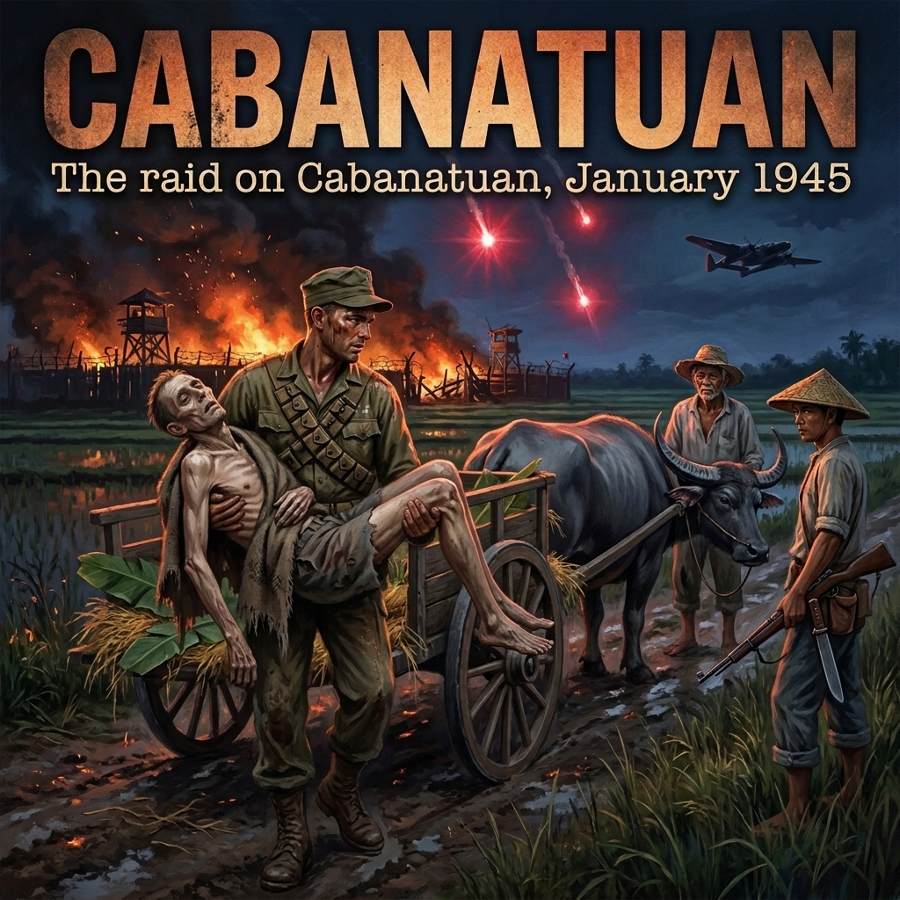

Plaza Cuartel, Puerto Princesa, Palawan Island
December 14, 1944 — 13:00 Hours
The air-raid siren did not rise in a steady wail; it shrieked in short, frantic bursts.
Staff Sergeant Eugene Nielsen dropped his spade. For months, the hundred and fifty Americans held at Puerto Princesa had looked up at the sky with a desperate, fatalistic longing, waiting for American twin-tailed P-38 Lightnings or Navy Hellcats to tear the clouds open. Allied planes had already begun pounding Luzon and the surrounding sea lanes, and every drone of an Pratt & Whitney engine overhead felt like an eviction notice served on the Imperial Japanese Army.
Across the dirt yard of Plaza Cuartel, Japanese guards were screaming, their boots thudding against the packed earth.
“Kūshu! Kūshu! Air raid! Quick, into the shelters!”
Nielsen looked toward the sky. The ceiling was clear, blinding blue over Puerto Princesa Bay. There was no engine roar, no flak bursts blooming white against the sun. Only the dry trade wind rustling the palm fronds and the sharp, rhythmic clinking of equipment.
A guard struck a soldier ahead of Nielsen across the shoulders with a split-bamboo cane. “Speedo! Into the ditch!”
The prisoners did not argue. Disobedience in Camp 10-A was answered with rifle butts or the standing-box. The men shuffled hurriedly toward the three covered air-raid trenches they had been forced to dig over the previous weeks. The shelters were long, narrow subterranean ditches, four feet deep, framed with heavy wooden timbers, and covered with two feet of dirt and coconut logs. Each shelter had an entrance barely wide enough for two men to squeeze through, facing inland away from the sea.
Nielsen squeezed into Shelter B. Fifty or sixty men were jammed shoulder-to-shoulder inside the damp, suffocating darkness. The earth walls smelled of wet fungus, rotting roots, and the sour, ammonia tang of unwashed, malarial bodies.
Beside him, an Army corporal pressed his face into his knees, his ribs protruding like the stays of a broken umbrella.
“You hear any motors, Sarge?” the corporal whispered. His voice was cracked, his lips split from vitamin deficiency.
“Quiet,” Nielsen said, straining his ears.
Outside, there was no sound of diving aircraft. There were no falling bombs.
Instead, Nielsen heard the heavy, metallic clatter of five-gallon drums being hauled across the earth. Then came the slosh of liquid.
A dark stream trickled over the lip of the shelter’s entrance, soaking into the dry dirt at the doorway.
The stench hit them in a single, suffocating wave. It was not diesel. It was high-octane aviation gasoline from the airfield they had spent two brutal years paving with pickaxes and hand-crushed coral.
Before anyone could shout, an arm in a green imperial uniform darted into the narrow opening. A flaming torch—waste cotton soaked in kerosene and lashed to a bamboo pole—was hurled into the mouth of the shelter.
A roar swallowed the world.
The gasoline vapor detonated with a concussive thump that drove the breath from Nielsen’s lungs. A rolling wall of orange fire swept down the length of the timbered tunnel. The roar was instantly drowned by the screams of fifty men burning alive at once.
Men became thrashing pillars of flame. The intense heat sucked the oxygen out of the ditch in seconds, searing their windpipes as they gasped. In the blinding flash of the blaze, Nielsen saw human figures clawing at the dirt roof, their skin peeling off in blackened sheets, their hair consumed in a hiss of blue sparks.
Through the opening of the shelter, the Japanese had positioned two Type 92 heavy machine guns on tripods.
A sailor who burst through the flames toward the light, screaming with his clothes on fire, was met at point-blank range by a steady, rhythmic clatter: thump-thump-thump-thump. The heavy 7.7mm slugs slammed into his chest, throwing him back into the inferno.
Hand grenades thumped into the trench floor, their black iron hulls rolling in the dirt before blasting shrapnel through the writhing bodies.
Nielsen didn't think. Instinct, raw and animalistic, hijacked his body. The entrance was a slaughter pen. He turned toward the far end of the trench where the dirt ceiling met the perimeter wire bordering the edge of the camp.
The camp sat atop a fifty-foot sheer coral cliff dropping straight down into the waters of Puerto Princesa Bay.
Nielsen slammed his shoulder against a gap in the log revetment, tearing through the splintered wood and earth. His fingers found purchase in the dirt, dragging his emaciated frame out of the pit. The heat scorched the back of his neck, the smell of burning human hair and sweet, sickening roasted flesh thick in his sinuses.
He came up into the open air behind the shelters.
The scene at the camp was an abattoir. Japanese soldiers were laughing and shouting, thrusting long bayonets into the entrances of the other trenches, hurling buckets of gasoline to stoke the fires. A few burning Americans had broken out of the eastern shelter and were sprinting blind across the yard; soldiers chased them with fixed bayonets, impaling them and pushing them back toward the burning pits.
Nielsen threw himself forward. The razor-sharp strands of the barbed-wire perimeter snagged his trousers and bit into his skin, tearing his flesh as he violently wrenched himself free.
A Japanese sentry turned, caught sight of him, and shouted: “Kura!”
The sentry raised his Arisaka rifle.
Nielsen did not wait for the shot. He launched himself out into empty air, over the edge of the cliff.
The fall was a blur of gray coral rock and green jungle vines. He plummeted fifty feet, crashing through the brittle branches of scrub trees that jutted from the limestone wall. The impact knocked the wind from him, jagged coral rocks tearing the skin from his knees, arms, and chest.
He hit the narrow strip of beach below with a heavy, wet thud.
Behind him, rifle fire snapped from the cliff’s edge. Slugs spatted into the wet sand and whined sharply off the rock face. One bullet grazed the meat of his leg, a hot, razor-like sting.
Nielsen scrambled on hands and knees through the shallows. At the waterline, where a tangle of mangrove roots and driftwood collected in a hollow beneath an undercut ledge of coral, he dragged himself into the salt water. He pulled a mass of floating sea wrack over his head and submerged himself until only his nose and eyes broke the surface.
Above him, the black smoke from the three trenches climbed straight up into the midday sky, carrying the charred ash of one hundred and thirty-nine men out over the bay.
Footsteps crunched heavily on the gravel nearby.
Two Japanese soldiers walked along the surf line, bayonets lowered, scanning the shallows. Nielsen held his breath, the stinging brine burning in the open gouges on his chest and leg. Through the waterweed, he watched them.
Ten yards away, they found another soldier who had survived the fall from the cliff, an American whose legs were broken on the rocks.
The man was groaning, dragging himself toward the water.
One of the Japanese soldiers stepped forward, set his heel firmly on the American’s chest to hold him flat, and drove his bayonet downward into the man's throat. He pulled the steel free with a wet sucking sound, wiped the blade across the dying man’s shirt, and looked out across the empty expanse of Puerto Princesa Bay.
Nielsen did not move a muscle. He remained frozen beneath the salt water, watching the blood disperse into the surf, waiting for the dusk to fall.
He was one of only eleven men who would survive the burning pits of Palawan. And in his mind, amidst the cold, paralyzing agony of the salt water, a single thought calcified:
If nobody gets word to the Sixth Army, they’re going to burn every camp on Luzon.
Sixth Army Forward Headquarters, Calasiao, Pangasinan Province
January 26, 1945 — 21:00 Hours
The ceiling fan did nothing to disperse the heat. It merely stirred the damp, cigarette-thickened air beneath the high rafters of the requisitioned Calasiao schoolhouse.
Colonel Horton V. White, the assistant chief of staff for Sixth Army Intelligence, dropped a sheaf of mimeographed intelligence sheets onto the wooden table.
Sitting across from him, illuminated by a bare electric bulb swinging from a fraying cloth cord, was Lieutenant General Walter Krueger. The commander of the Sixth Army was sixty4 years old, Prussian-born, deliberate, and unsparing. His square spectacles rested low on his nose, catching the pale glare of the bulb as he leaned forward over a sprawling 1:50,000 tactical map of Central Luzon.
"Read it again," Krueger said. His voice was a flat, gravelly baritone.
White picked up the top document: the sanitized transcript of Staff Sergeant Eugene Nielsen’s debriefing, forwarded from Morotai.
"Aviation fuel," White said without looking down. He had already read it four times. "One hundred and fifty men forced into covered revetments at Puerto Princesa. Torches thrown into the entrances. The survivors bayoneted or shot in the surf. Nielsen got out across the bay. Ten others made it to the southern tip of Palawan. The rest—one hundred and thirty-nine—were incinerated."
Krueger’s fingers tapped once against the edge of the map table, a sharp, hard rap of knuckles against plywood.
"The War Ministry directive," Krueger muttered.
"August 1st of last year," White said, flipping to the second sheet—an intercepted Imperial Japanese Army administrative instruction regarding the disposition of prisoners of war. "It specifies: Under no circumstances must the enemy be allowed to liberate prisoners. When an emergency situation occurs, liquidate them completely and leave no trace."
White reached out with an unsharpened lead pencil and laid the tip directly on a small, hand-drawn grease-pencil circle thirty miles east of the advancing American front lines.
"Pangatian," White said. "Three miles east of Cabanatuan City, Nueva Ecija Province. Major Bob Lapham’s guerrillas confirm there are still over five hundred men inside. Survivors of the Bataan Death March and Corregidor. A few British and Dutch sailors. Two years ago there were thousands. Most were shipped out on the hell ships or died of dysentery and malaria. The five hundred left are the ones too sick or broken to be moved to the home islands."
Krueger stared at the grease pencil mark.
The Sixth Army had come ashore at Lingayen Gulf on January 9. The 37th Infantry Division and the 1st Cavalry Division were hammering south through the central plains, driving toward Manila. But Cabanatuan lay deep in the eastern flank, cut off behind Japanese lines, squarely along the main retreat corridor of General Tomoyuki Yamashita’s 14th Area Army.
"If Yamashita pulls his divisions back into the Sierra Madre," Krueger said, "Pangatian falls right on their path of withdrawal."
"They're moving now, General," White said. "Lapham's radios report heavy Japanese traffic through Cabanatuan City. If the Japanese commander at Pangatian decides the camp is a liability, or if our lines push five miles closer, they will carry out the August 1st directive. They will dig the ditches, bring out the fuel drums, and light the match."
Krueger stood up slowly, pushing back his wooden folding chair. He walked to the window, staring out into the pitch-black schoolyard where the idling generators hummed in the humid night.
"The Bataan men," Krueger murmured. His voice tightened, the gravel in it scraping raw. "They've survived three years in that hell. If they are murdered thirty miles behind my lines while I march toward Manila, it will be an indelible stain on this command."
He turned back to the room.
"Get Mucci."
January 27, 1945 — 06:30 Hours
Lieutenant Colonel Henry A. Mucci did not walk into headquarters; he strode, boots striking the floorboards with military precision.
He was thirty-five years old, five-foot-seven, built like a lightweight boxer, with slicked-back dark hair, a neatly trimmed mustache, and a jaw that looked as though it had been squared off with an adze. Between his teeth sat an unlit briar pipe. Slung low on his right hip was his trademark pearl-handled Colt .45.
Mucci had taken command of the 98th Field Artillery Battalion in New Guinea, stripped it of its pack mules and howitzers, subjected the men to five hundred miles of forced marches, bayonet drills, and amphibious landings, and turned them into the U.S. Army’s 6th Ranger Battalion. He was theatrical, abrasive, and worshipped by the farm boys from Missouri, Texas, and Iowa whom he had forged into shock troops.
He came to a halt before Krueger’s desk and threw a razor-sharp salute.
"Colonel Mucci reporting, General."
Krueger did not return the salute with theater. He raised a hand in a tired, dismissive wave and gestured to the map.
"At ease, Henry. Look at this."
Mucci stepped to the table. His dark eyes instantly tracked the blue grease lines marking the American lines near Guimba, and then jumped the open, white void of enemy territory to the red ink at Cabanatuan.
"Intelligence reports five hundred Allied prisoners at Camp Pangatian," Krueger said, watching Mucci's face. "The Japanese are preparing to wipe them out. I want you to go in there, take that camp, and bring those men out."
Mucci looked from the red circle to Krueger.
"How deep, sir?"
"Thirty miles past our outposts," Krueger replied flatly. "You'll be completely cut off. No artillery support. No armor. If the Japanese catch you in the open, they have thousands of troops along the national highway. You will have to go on foot, hit the stockade, eliminate the garrison, and walk five hundred crippled men back through enemy territory."
Mucci’s pipe shifted from one corner of his mouth to the other. His eyes did not blink.
"When do we move, General?"
"As soon as you can mount it," Krueger said. "Colonel White has ten Alamo Scouts ready to lead your reconnaissance. We have contacts with two guerrilla leaders in Nueva Ecija: Captain Juan Pajota and Captain Eduardo Joson. They know the terrain. But the execution is yours."
Krueger stepped forward until he was standing inches from the younger officer. He reached out and gripped Mucci’s shoulder with a heavy, weathered hand.
"Henry," Krueger said softly, the Prussian reserve cracking for a fraction of a second. "Bring our boys home. Don't you dare come back without them."
"We'll bring 'em out, General," Mucci said. "Or we won't come back at all."
6th Ranger Battalion Staging Area, Calasiao
January 27, 1945 — 08:00 Hours
Captain Robert Prince was fast asleep on a canvas folding cot in his squad tent when the canvas flap was violently thrown open.
A shaft of blinding morning sunlight hit Prince’s face. He blinked against the glare, reaching instinctively for the carbine leaning against his cot frame, before his vision cleared.
Mucci was standing in the doorway, the pipe clamped firmly between his teeth, holding a rolled-up topographical map under his arm like a riding crop.
"Rise and shine, Bob," Mucci barked.
Prince rubbed his eyes and swung his legs over the side of the cot. At twenty-five, the soft-spoken, analytical Seattle native was the tactical brain of the battalion. Where Mucci was fire, bravado, and impulse, Prince was cold mathematics, angles, and meticulous logistics. Mucci commanded the battalion; Prince designed its violence.
"What do we have, Colonel?" Prince asked, his voice thick with sleep.
Mucci unrolled the map across Prince's rumpled olive-drab wool blanket, pinning the corners down with a trench knife and an empty canteen.
He leaned over the cot, pointing a blunt, calloused finger directly at the speck marked Pangatian.
"Five hundred of our boys," Mucci said, his voice dropping to a low, intense growl. "They’re thirty miles behind the Jap lines, Bob. Starving. Sick. And the bastards are getting ready to burn them alive."
Prince looked down at the map. His eyes took in the vast, unbroken white spaces between Guimba and Cabanatuan—flat, coverless rice paddies crisscrossed by rivers and paved military roads.
"How many men are we taking?" Prince asked quietly.
"Two companies," Mucci said. "C and part of F. A hundred and twenty Rangers. Plus the Scouts."
Prince traced a finger from the American front line out into the open void.
"Thirty miles in," Prince calculated aloud, his analytical mind already stripping the mission down to its fatal choke points. "Thirty miles back. That's sixty miles through open paddies with five hundred men who probably can't even stand up."
He looked up at Mucci.
"How are we going to carry five hundred dying men across thirty miles of open country without being cut to pieces by Japanese armor?"
Mucci struck a match against the heel of his boot and touched the flame to the bowl of his pipe, blowing a thick gray plume of smoke toward the canvas roof.
"You're the tactical planner, Bob," Mucci said, eyes gleaming. "Figure it out."
6th Infantry Division Outpost, East of Guimba, Nueva Ecija
January 27, 1945 — 16:30 Hours
The American war was loud. It smelled of sulfur, wet canvas, exhaust fumes, and leaded gasoline. At the edge of Guimba, where the forward elements of the 6th Infantry Division had thrown a perimeter of sandbags and barbed wire across the road, six-by-six trucks rumbled in low gear, their tires churning the dry clay into plumes of blinding yellow dust.
Beyond the sandbags, the noise simply stopped.
Ahead stretched thirty miles of flat, sun-baked plain, a vast and silent ocean of dry rice stubble broken only by clumps of bamboo, meandering riverbeds, and dense islands of cogon grass standing seven feet tall. Somewhere in that quiet expanse was General Tomoyuki Yamashita’s 14th Area Army: thousands of retreating Imperial Japanese soldiers, artillery emplacements, and the prison stockade at Pangatian.
In the shade of a ruined sugar mill fifty yards behind the outpost line, ten men sat on their haversacks in a tight circle.
They were the Alamo Scouts.
Formed on Fergusson Island in late 1943 by order of General Krueger, they were the Sixth Army’s elite reconnaissance eyes. Every man was a volunteer, hand-picked for physical stamina, psychological self-sufficiency, and the ability to disappear into hostile terrain for weeks at a time without making a sound.
First Lieutenant William E. Nellist—tall, lean, twenty-eight years old, from northern California—knelt in the dirt, cleaning the bolt assembly of an M1 carbine with an oily rag. Across from him sat First Lieutenant Thomas Rounsaville, an athletic Oklahoman who led the second scout team.
Rounsaville checked the tension on the sling of his Thompson submachine gun.
"White was explicit," Rounsaville said, keeping his voice below the idle of a nearby generator. "We don't pick fights. We don't ambuscade patrols. We go in, we find the stockade, we map the wire, we count the guns, and we stay invisible until Mucci brings the hammer."
Nellist slid the bolt back into the receiver with a muted, metallic click.
"If they spot us out there," Nellist said quietly, "the Japanese garrison won't even wait for Mucci. They'll light the fuel trenches while we're still trying to run through the cogon."
Beside them, Sergeant Thomas Siason—a Filipino-American scout whose fluent Tagalog would serve as their voice—was checking the field gear of the team. With him were the enlisted scouts: Sabas Asis, Rufo Vaquilar, Gilbert Cox, Andrew Smith, Galen Kittleson, Bill Wismer, and Alfred Alfonso.
Their preparation was surgical. Everything that could make noise or catch the light was eliminated.
The men removed their steel M1 helmets, leaving them behind with the supply quartermaster, opting instead for soft olive-drab fatigue caps. Metal dog tags were wrapped tightly in black friction tape to keep them from clinking against buttons. Belt buckles were dulled with mud. Each man carried an extra bandolier of ammunition, two canteens of chlorinated water, sulfur-coated quinine tablets to keep the malaria down, and a high-powered pair of naval binoculars.
In their packs, folded flat, were woven straw hats and coarse cotton peasant shirts. If they were trapped in the open paddies by day, they would have to discard their web gear and pass as Filipino farmhands tending water buffalo.
At 17:15, a dust-caked jeep pulled up to the sugar mill.
Major Robert Lapham, the legendary American guerrilla leader who had operated behind Japanese lines in Central Luzon since the fall of Bataan in 1942, stepped out. He was dressed in worn khaki trousers and a sidearm holstered in grease-darkened leather. With him were two Filipino guerrillas carrying vintage Enfield rifles.
Lapham greeted Nellist with a brief, dry handshake.
"Your corridor is clear for about five miles east," Lapham said, pointing down the dirt track that vanished into the brush. "After that, it belongs to the Japanese. The 19th Division is falling back from the south, funneling troops through Cabanatuan toward the mountains. You cross the highway after midnight. If you hit a patrol, you’re on your own. My boys can’t mass to pull you out without tipping off the camp garrison."
"We won't need pulling out," Nellist said.
Lapham looked at the ten young Americans. Their faces were smeared with dark ash and mud, their eyes cool, professional, and detached.
"Pajota knows you're coming," Lapham added. "Look for his runners around Balincarin. Code phrase is 'Victory'—the counter is 'Liberty.' If they don't give you the counter, shoot first."
Nellist nodded once. He slipped his carbine into its sling and turned to his team.
"Up," Nellist said softly.
The ten men rose without a word, swinging their lightened packs onto their shoulders. They filed past the sugar mill, walking in a staggered ranger file, five yards between each man.
They reached the sandbag revetment at the Guimba outpost. A young infantry corporal from the 6th Division was leaning against an air-cooled .30-caliber machine gun, chewing a stalk of dry grass. He looked at the Scouts' soft caps, their mud-blackened faces, and the taped weapons.
"Where you boys headed?" the corporal asked.
"East," Nellist said.
"Nothing out there but dead country and about twenty thousand Japs," the corporal said, shaking his head.
"Good," whispered Pfc. Galen Kittleson as he stepped around the sandbag wall. "Then they won't expect company."
The ten men stepped across the furrowed tire ruts of the American line and entered the tall, yellowish-green sea of cogon grass. The razor-sharp blades of the grass rose above their heads, closing behind them like a curtain.
Within thirty seconds, the Alamo Scouts were gone.
6th Ranger Battalion Bivouac, Calasiao, Pangasinan Province
January 27, 1945 — 20:30 Hours
The grease pencil lines on Captain Robert Prince’s tactical map were dry.
Inside the requisitioned tent, Prince set down his brass compass. He had picked Company C, under First Lieutenant William J. O’Connell, and the 2nd Platoon of Company F, under First Lieutenant John F. Murphy. Together with Mucci’s headquarters staff, communications men, and medical personnel, the strike force totaled 128 officers and enlisted men.
They were not veterans of storied, bloody European campaigns. Less than a year earlier, most had been mule-skinners in the 98th Field Artillery Battalion, sweating through pack-howitzer drills in the red clay of Camp Carson, Colorado. They were farm boys from Iowa, mechanic’s apprentices from Pennsylvania, lumber hands from Oregon, and cotton pickers from Texas. Mucci had remade them in the malaria-ridden swamps of New Guinea—weeding out the weak with thirty-mile marches with eighty-pound packs, forced beach landings, and ruthless hand-to-hand knife training.
They were lean, sun-baked, and untried in a mission of this magnitude.
Outside, the bugle blew recall, and the men gathered in the nave of the half-ruined Spanish parish church adjacent to the encampment. The stone walls were pitted from shellfire; the roof was gone, leaving the blackened timber beams open to the stars.
Lieutenant Colonel Henry Mucci stood at the foot of the altar, his boots planted wide on the cracked stone. His unlit pipe was tucked into his pocket. His eyes were cold, sweeping the gathered ranks.
Beside him stood Father Hugh Kennedy, the battalion chaplain.
"Sit down," Mucci barked.
The clatter of one hundred and twenty-eight men dropping onto the stone benches echoed through the roofless church.
"We have five hundred American soldiers thirty miles behind the Jap lines at a camp called Pangatian," Mucci said, his voice flat, carrying without an echo into the warm night air. "Survivors of Bataan. They’ve eaten grass and worms for three years. Right now, Yamashita’s butcher units are retreating right through their backyard. In Palawan, two weeks ago, the Japs herded a hundred and fifty of our boys into trenches, threw in aviation gas, and burned them until they were charcoal."
A heavy, suffocating silence dropped over the pews. Not a rifle sling clicked; not a boot scraped.
"That is what they have planned for the boys at Pangatian," Mucci continued, stepping forward. "General Krueger gave this job to us. We leave before daylight. We walk thirty miles in. We wipe out the garrison. We put those living skeletons on our backs, and we carry them thirty miles back out through the Jap army."
He paused, letting the reality settle into the marrow of their bones.
"I am not asking for volunteers. You were picked because you’re Rangers. But understand this: there will be no retreats. If any man falls wounded, his buddy doesn't stop. The mission goes forward. If we are surrounded, we fight until the last blessed round is fired and we die with our boots on. We do not leave one single prisoner behind. Not one."
Mucci turned toward the chaplain.
"Every man among you will make his peace with God tonight," Mucci commanded. "I don't care if you're Catholic, Protestant, or Jew. Go to confession. Father Kennedy will give general absolution. If you believe in prayer, pray. But when we cross that line tomorrow, you pray with an M1 in your hands."
Mucci turned on his heel and strode down the center aisle, his boots clicking like hammer-drops on the stones.
In the second row, Captain James C. Fisher, the battalion’s twenty-nine-year-old medical officer, leaned forward, resting his elbows on his knees. Fisher, a Harvard Medical School graduate from Massachusetts, was quiet, brilliant, and deeply respected by the enlisted men.
Lieutenant O’Connell glanced over at him. "Doc, you don't have to walk thirty miles for this. You could stage at the forward aid station in Guimba."
Fisher shook his head slowly. "If five hundred starving men are waiting thirty miles out, they’re going to need plasma, morphine, and a doctor the second the gate comes down. If you boys go, I go."
By 23:00, the church was quiet again, and the company streets became an assembly line of cold preparation.
There was no talk of glory. In the dim lantern light inside the tents, Rangers stripped down their weapons, cleaning away every speck of carbon and sand. They rejected the heavy, clattering steel helmets; soft green fatigue caps were tucked into pockets or pulled tight over buzzed heads.
Sergeant Marvin "Red" Stewart, a hulking Texan in F Company, sat on an overturned ammunition crate with a roll of black adhesive friction tape. Methodically, he bound every loose buckle on his web gear. He took his stamped metal dog tags, placed a strip of tape between them, and bound them tightly together until he could shake them against his fist without a sound.
Nearby, Corporal Roy Sweezy was loading an extra six-pocket canvas bandolier with eight-round en bloc clips for his M1 Garand. Sweezy was twenty-eight, steady, and known across C Company as one of its most reliable squad leaders. He slid thirty-caliber armor-piercing rounds into the clips with a deliberate, rhythmic pressure of his thumb.
"How's the leg, Roy?" a private asked from across the tent.
"Fine," Sweezy said without looking up. "Just pack extra morphine syrettes in your front pocket, not your pack. If you get pinned on your belly in the paddies, you can't reach your rucksack."
At 03:30 on the morning of January 28, a whistle blew through the bivouac.
The men moved out of the tents into the cool, pre-dawn dampness. They formed two silent files in the company street. Each man carried an extraordinary load of ammunition: five hundred rounds per rifleman, drums of .45-caliber slugs for the Thompsons, canvas bags of 2.36-inch rockets for the bazookas, and heavy crates of fragmentation grenades.
A line of olive-drab 2.5-ton "deuce-and-a-half" trucks idle-rumbled along the dirt track, black-out driving lights casting faint slits of yellow against the ground.
Prince walked the line, inspecting every man's load. He stopped in front of Sweezy, tapped the corporal's taped canteen, and nodded.
"Mount up," Prince ordered quietly.
The Rangers swung themselves over the wooden tailgates into the darkened beds of the trucks. The tailgates slammed shut with heavy iron thuds.
The convoy slipped its clutches, the dual rear tires gripping the dirt, and rolled out of Calasiao heading southeast toward Guimba, disappearing into the black morning mist.
East of Guimba to the National Highway, Nueva Ecija Province
January 28, 1945 — 14:00 Hours
The sixty-mile ride from Calasiao had shaken the men to the bone. The trucks had rattled south through the dust of Pangasinan all morning, finally grinding to a halt in the staging area behind the 6th Infantry Division’s lines at Guimba shortly after midday.
There was no time for rest. In the shade of a line of acacia trees, the Rangers made their final weapon checks, swallowed salt tablets, and filled their canteens to the brim with warm, chlorinated water.
At 14:00, Lieutenant Colonel Henry Mucci checked his compass and gave the hand signal.
One hundred and twenty-one Rangers, followed by Mucci’s headquarters staff and Captain Jimmy Fisher’s medical team, filed past the forward outpost sandbags and slipped into the open plain.
Two in the afternoon was the hottest hour of the day in Central Luzon. The sun hung straight overhead, baking the flat expanse of dried rice paddies until the cracked clay radiated heat like an iron stove. The harvest had left only brittle, ankle-high yellow stubble. The paddies offered no cover, partitioned only by low earthen dikes six to eight inches high. The only concealment across the entire shimmering horizon came from scattered thickets of wild bamboo and dense, towering islands of razor-edged cogon grass.
The column moved out in a staggered double file, five to ten yards between men.
"Keep that interval open," Captain Bob Prince said quietly, passing down the line of Company C. "If an enemy mortar finds us, don't give them a cluster."
The dust kicked up by more than a hundred pairs of combat boots hung in the still air, clinging to the men’s sweat-soaked olive-drab fatigues. Their heavy packs, stuffed with extra bandoliers, bazooka rockets, and mortar rounds, dug hard into their shoulders.
At 15:30, a sharp hiss came from the point scout.
"Plane! Freeze!"
The command rippled backward. The entire company dropped flat into the dry stubble, pressing their bodies against the cracked clay dikes.
Prince pulled the brim of his soft fatigue cap low over his forehead, burying his cheek into the dirt. High above, a Japanese army reconnaissance aircraft droned lazily across the blinding blue sky, flying southwest toward Clark Field.
Mucci had warned them repeatedly: Do not look up. A pale face turns into a white signal mirror in this sun.
Men lay motionless, fingers curled around their rifle slings, inhaling the alkaline dust of the dried mud. For four long minutes, the only sound was the steady drone of the radial engine overhead and the clicking of dry grasshoppers in the stubble. The aircraft banked slightly toward the coast, its engine tone fading until the plains were silent again.
Mucci pushed himself up to one knee. "On your feet. Move out."
By late afternoon, the terrain sloped gently downward into a dry, sun-scorched drainage swale.
Ahead, running north to south across their line of march, was the primary artery of the province: the paved two-lane National Highway. Intelligence had warned that the Imperial Japanese Army’s 19th Division was actively funneling motor convoys, armor, and artillery along this road, retreating northward toward the Cagayan Valley. Crossing it in the daylight was an invitation to slaughter.
Prince moved forward to where the lead scout was crouched behind a cluster of wild cane.
"What do you see?" Prince whispered.
"Asphalt, Captain," the scout murmured, pointing through the stalks. "And there’s traffic. We’ve had two staff cars and a truck pass in the last ten minutes."
Prince brought up his binoculars. The highway sat elevated on an artificial embankment, four feet above the surrounding paddies. To scramble a hundred and twenty men up the embankment and across the exposed blacktop would expose them to any Japanese driver within two miles.
Then Prince’s eyes tracked the natural drainage ditch they were crouching in.
The swale deepened into a dry, eroded gully that ran directly toward the roadbed, cutting straight beneath the highway through a concrete-and-timber culvert bridge. The opening was barely four feet high, choked with driftwood and dried thorn bushes, but large enough for a man on hands and knees.
Prince crawled back to Mucci. "We don't cross the asphalt, Colonel. There's a culvert under the bridge. We go underneath."
Mucci chewed the stem of his pipe, nodding once. "Single file. Move through fast, keep your weapons out of the muck, and don't make a sound."
Prince took the lead for Company C. He dropped onto his hands and knees and slid into the shadow of the culvert beneath the roadbed. The air inside the underpass was cooler, smelling of stale mud, rot, and stagnant water.
Halfway through the concrete tunnel, the earth began to vibrate.
Prince froze, his hand snapping backward to halt the men behind him.
Above their heads, the concrete slab trembled violently. A heavy, metallic clanking echoed through the culvert—the rhythmic, deafening squeal of steel tracks grinding over asphalt.
A Japanese medium tank was rolling across the bridge.
In the suffocating gloom beneath the road, the Rangers held their breath. Overhead, the tank’s diesel engine roared, sending loose dirt and powdered concrete showering down onto Prince’s neck and shoulders. A piece of dry timber grooved into his knee, but he did not shift his weight. Behind him, Corporal Roy Sweezy was crouched with his M1 Garand pinned flat against his chest, eyes fixed on the ceiling.
For twenty agonizing seconds, the machine ground its way directly over their heads, the track pads clattering like sledgehammers against the road deck.
Then the vibration began to ease. The roar of the exhaust drifted southward, swallowed by the wide plains.
Prince scrambled forward out of the far end of the culvert, emerging into a deep ditch lined with tall cogon grass on the eastern side of the highway. Sweezy came out behind him, followed by the rest of the company, two by two, dragging their weapons clear of the brush.
Within twenty minutes, all 128 men had slipped under the highway without a single shot fired.
As Prince stood in the shadow of the tall grass, checking his squad counts, three figures materialized from the thick cane at the edge of the ditch.
They were Filipinos, dressed in ragged cotton shirts and wide-brimmed woven straw hats. Two carried vintage American Enfield rifles slung over their shoulders with hemp twine; the third held an unsheathed bolo knife, its broad steel blade darkened with oil.
The leader stepped forward, his eyes scanning Prince’s uniform and the subdued insignia on his collar.
"Victory," the man whispered.
Prince let out a slow, measured breath.
"Liberty," Prince replied.
The scout lowered his rifle slightly, a tight, grim nod acknowledging the password.
"Captain Pajota sends us," the scout said in measured English. "He knows you crossed the road. Follow us away from the main trails. We take you to Balincarin."
1.5 Miles North of Camp Pangatian, Nueva Ecija Province
January 28, 1945 — 17:00 Hours
The Alamo Scouts had been moving for nearly twenty hours.
Having slipped out of Guimba the previous evening under a half-moon, First Lieutenant Bill Nellist and First Lieutenant Tom Rounsaville had pushed their thirteen-man combined patrol across twenty-four miles of enemy territory. They had slithered under the national highway in the dead of night, reached the guerrilla outpost at Balincarin at dawn, choked down cold rice and beans, and immediately pressed south toward the target.
Now, as the late afternoon sun began to dip, Nellist was on his stomach in the mud.
He lay at the crest of a low, weed-choked knoll just north of the Pampanga River. Beside him, Sergeant Thomas Siason and Pfc. Galen Kittleson were buried in the razor-sharp cogon grass, their fatigues soaked through with brackish river water from wading the crossing.
Nellist parted the yellow stalks with two fingers, taking care not to disturb the natural wind-sway of the grass. He uncapped the lenses of his high-powered naval binoculars and brought them to his eyes.
Through the shimmering heat distortion rising off the plains, Camp Pangatian rose into view.
The stockade sat squarely in the open, an ugly, rectangular scar carved out of the flat agricultural landscape.
Nellist adjusted the focus ring. The camp was roughly eight hundred yards long by six hundred yards wide. Running along its northern perimeter was the paved asphalt of Highway 5—the primary artery connecting Cabanatuan City to the Cabu River bridge.
Surrounding the entire perimeter were multiple parallel aprons of barbed wire, eight feet high, strung taut between heavy hardwood posts. At the corners and along the fences stood elevated wooden guard towers topped with thatched roofs, each manned by sentries behind Type 92 heavy machine guns.
Nellist tracked the glass across the interior.
The camp was split down the middle by a broad central roadway. To the east lay the Japanese garrison area: solid, well-built quarters, administrative buildings, corrugated-tin storage sheds, and vehicle shelters. To the west lay the prisoner enclosure: dozens of sagging, decrepit bamboo barracks thatched with rotting cogon grass, surrounded by their own internal fences of barbed wire.
"Look at the ground," Rounsaville whispered, his voice barely carrying two feet.
Nellist didn't answer. He was already looking, and his stomach tightened.
The ground was a tactician's nightmare. For nearly a mile in every direction, the fields surrounding Camp Pangatian were as flat and bare as a billiard table. The rice harvest had stripped the land down to dry, ankle-high stubble. There were no trees, no gullies, no depressions. The only features breaking the cracked clay were the irrigation dikes—narrow earth ridges barely eight inches high.
"There's no cover," Kittleson murmured from Nellist's shoulder. "A rabbit couldn't cross that flat without getting cut in half."
Nellist shifted the glasses toward the main entrance along Highway 5.
The front gate was massive—nine feet of heavy, saw-cut timber, secured with iron chains. Flanking it was a fortified sandbag guardhouse and a semi-sunken pillbox with a narrow firing slit pointed directly down the approach.
As Nellist watched, the main gate swung open.
A Japanese military convoy—four heavy Isuzu trucks loaded with armed infantry—rumbled past the gate, heading east along Highway 5 toward the Cabu River bridge. Dust billowed behind the convoy, catching the red glare of the sinking sun.
Through the dust cloud, Nellist caught sight of a figure inside the wire.
A man was hobbling across the central yard. He wore only a ragged pair of torn khaki shorts, held up with a piece of wire. His ribs looked like the slats of a fruit crate; his skin was a mottled, sickly yellow-gray. He moved with an excruciating, shuffling gait—the classic high-stepping stomp of severe dry beriberi, swinging nerve-dead feet forward because he could no longer feel the ground.
The American soldier stumbled, fell onto his knees in the dust, and lay there for a long moment before slowly, painfully clawing himself back to his feet.
No guard bothered to beat him. They didn't need to. The man was dying on his own.
Nellist lowered the binoculars. His jaw was set so hard the muscles jumped beneath the soot on his cheek.
"How many guards do you make?" Rounsaville asked.
"Two hundred to two hundred and fifty regular garrison," Nellist said quietly. "Plus whatever transit units are moving along the highway. And there's an entire battalion bivouacked just across the bridge at Cabu."
"Prince and Mucci think they're going to hit this place tomorrow night," Rounsaville said.
Nellist looked back across the flat, open killing zone between the river and the wire. He noticed a tiny, weathered nipa hut sitting solitary in the middle of a field, roughly three hundred meters from the camp's front gate—an abandoned shelter where farmers kept tools.
Tomorrow night is suicide, Nellist thought. If Mucci charges across those flats in the dark, the towers will turn the paddies into an abattoir.
He turned to Sergeant Siason.
"We need every gun, every bunker, and every wire gate mapped down to the yard," Nellist ordered. "Keep watch here until dark. At first light, we find Pajota, and we tell Mucci what he's walking into."
Camp Pangatian (Cabanatuan POW Camp No. 1)
January 28, 1945 — 18:30 Hours
The stench of the camp was an organic, living thing. It rolled off the barracks in the evening calm: a nauseating blend of stagnant latrine trenches, carbolic acid, decaying flesh, and the sour, watery vomit of amoebic dysentery.
Captain Ralph Hibbs, a thirty-two-year-old medical officer formerly of the 31st Infantry Regiment, knelt on the split-bamboo floor of Ward 9.
The building was little more than an open-air pavilion thatched with rotting cogon grass, devoid of beds, screens, or blankets. In the early days of 1942, when thousands of men were dying at a rate of thirty to fifty a day, this section had been called the "Zero Ward"—the place where the living were set aside to wait for the daily burial detail to carry them out to the mass trenches.
Now, only 512 prisoners remained in the entire stockade, the winnowed, fragile residue of Bataan and Corregidor.
Beneath Hibbs lay an artillery sergeant from Ohio. The man's legs were swollen to twice their natural size, the pale skin stretched so tight it looked translucent and glossy, like sausage casing about to burst. Small droplets of clear, serous fluid seeped from microscopic fissures around his ankles, soaking into the bamboo slats.
It was wet beriberi. The sergeant’s heart was working itself to death, struggling to pump fluid through vascular beds collapsed by three years of vitamin B1 starvation.
"Doc," the sergeant whispered. His lips were split and bleeding from riboflavin deficiency; his eyes were sunken deep into bruised, hollow sockets. "My feet are on fire. Turn the burner off."
"I know, John," Hibbs said gently.
There was nothing to turn off. Dry beriberi had stripped the myelin from the nerves of the man’s lower extremities, producing the agonizing neuropathy the prisoners called "Cabanatuan electric feet." Even the whisper of a cotton sheet against a toe felt like a blowtorch on raw meat.
Hibbs reached into the pocket of his frayed khaki shirt and pulled out a tiny paper twist containing a single white tablet of sulfanilamide and half a multivitamin.
He placed the medicine on the sergeant's tongue and held a tin cup of boiled water to his cracked lips.
"Swallow it down," Hibbs said.
The sergeant choked, swallowed, and fell back against the wood, gasping.
That half-tablet was a miracle that had cost lives outside the wire. If five hundred men were still drawing breath in January 1945, it was not because of Imperial Japanese Army rations—which had dwindled to three small bowls of watery rice lugao and boiled weed tops a day, barely eight hundred calories.
They were alive because of an underground pipeline that stretched all the way from the blacked-out alleys of Manila.
For two years, a courageous network of civilian women—led by Margaret Utinsky, an American nurse known simply as "Miss U," and Claire Phillips, code-named "High Prowl"—had operated right under the gaze of the Kempeitai. Through Filipino woodcarters, vegetable delivery drivers, and courageous priests like Father Cosgrave, they had smuggled thousands of pesos, clandestine news broadsheets, sulfanilamide, and precious bottles of thiamine hydrochloride into Camp Pangatian hidden inside hollowed-out bamboo poles and false-bottomed carts.
By late 1944, that lifeline had been choked off. The Japanese secret police had arrested, tortured, and imprisoned Phillips in Fort Santiago; Utinsky was forced into hiding in the hills. The medicine was almost gone.
Hibbs stood up, his own joints popping. He weighed barely one hundred and ten pounds. His vision was permanently damaged—the classic nutritional amblyopia of the camp, an irreversible blurring of central vision brought on by years without vitamin A. Half the men in the ward were functionally blind, feeling their way around the bamboo uprights with sticks.
He walked to the doorway of the hospital shed.
Outside, the tropical twilight was dying fast. Across the camp's central road, the Japanese compound was bustling with a frantic, menacing energy. Imperial Japanese Army transport trucks with dimmed headlights were idling along Highway 5. Soldiers in steel helmets and full field gear were marching in tight, dust-caked columns past the front gate, moving toward the Cabu River bridge to the east.
They were transit troops, withdrawing from the central front ahead of MacArthur’s spearheads. They looked lean, vicious, and hard-eyed.
Near the central gate, a middle-aged American soldier—a veteran of the 26th Cavalry who had lost his hearing to malaria—shuffled across the dust carrying a wooden bucket of slop toward the refuse pit.
He passed a Japanese guard without noticing him.
"Kura!" the sentry roared.
The guard—a thickset private in sweat-stained olive wool—stepped into the path of the deaf cavalryman. Without hesitation, the soldier swung his Arisaka rifle two-handed, driving the heavy wooden butt into the side of the American’s jaw.
The crack of splintering bone was sharp and sickening.
The cavalryman crashed sideways into the dirt, the bucket clattering across the gravel, spilling dirty water. The guard stood over him, unholstering a split-bamboo rod, and began lashing the fallen man’s back with rhythmic, furious strokes.
“Baka! Bow to the Emperor's soldiers!”
From the shadows of the barracks, fifty pairs of hollow eyes watched in absolute, terrifying silence. No one moved. No one protested. In three years, they had learned the mathematics of resistance: one word of complaint meant the standing-box in the noon sun, or three days hung by the wrists from a mango tree, or the firing squad in the ditch behind the motor pool.
The guard finally spat on the unconscious cavalryman, slung his rifle, and stalked off toward the gatehouse.
Hibbs stepped into the dust, hurried across the lane, and hoisted the broken man under the armpits, dragging him into the dark sanctuary of the ward.
Father Eugene O’Keefe, the camp chaplain, met him at the door with a rag soaked in carbolic wash. O’Keefe was emaciated, his cassock reduced to a tattered gray cotton shirt, but his hands were steady as he cleaned the blood from the unconscious cavalryman's crushed jaw.
"How is he, Ralph?" O’Keefe asked softly.
"Broken mandible," Hibbs whispered, his hands trembling with adrenaline and exhaustion. "He'll live. If they don't bring the gasoline tomorrow."
O'Keefe paused, his thumb pausing on the wounded man's temple.
"You've seen the trucks on the road," Hibbs said, his voice dropping so low it was swallowed by the buzzing mosquitoes. "They're pulling out the garrison. The transit troops are moving through. When the front line gets within twenty miles, they won't leave five hundred witnesses behind to testify at a war crimes trial. We all know what happened at Palawan. It's a matter of days. Maybe hours."
Father O'Keefe looked out the bamboo window toward the front gate. The guard towers loomed black against the purple sky, the twin barrels of their heavy machine guns pointed inward, directly at the barracks.
"Then pray the Lord sends someone across those paddies," O'Keefe whispered, "before the trucks come back."
Rural trails between Lobong and Balincarin, Nueva Ecija Province
January 28, 1945 — 21:00 Hours to January 29, Dawn
Night brought no coolness to the Central Luzon plain, only a suffocating stillness.
The column of one hundred and twenty-eight Rangers stretched out in the dark like an articulated snake, moving along the narrow dirt cart tracks that wound between dry rice paddies. The powdered clay of the trails had been pulverized by bullock carts during the dry season; with every boot step, it rose in fine, choking clouds that clung to sweat-soaked faces, gritty against teeth and stinging in the corners of eyes.
Captain Robert Prince walked near the head of Company C, his compass open in his left palm. The luminous dial gave off a faint greenish glow against the dark.
Ahead of them, two barefoot Filipino guerrillas moved with effortless, ghost-like strides. They did not use flashlights. They navigated by the faint outlines of mango groves, bamboo brakes, and the distant, saw-toothed silhouette of the Sierra Madre mountains to the east.
Every sound seemed magnified a hundredfold.
The dull clack of an entrenching tool against a canteen. The heavy, rhythmic rasp of a hundred men breathing through dry throats. The soft thud of rubber-soled combat boots hitting the dust. Whenever a piece of metal clicked, Prince felt a spike of adrenaline cold in his gut.
Thirty miles behind enemy lines, a single noise could bring an armored car patrol down the nearest connecting road.
"Close up the file," Prince whispered back down the line. "Watch your spacing."
Behind him, Corporal Roy Sweezy turned and tapped the shoulder of the man following him. The Rangers were loaded down like pack mules. Beyond their standard rifles and sidearms, each squad was hauling extra bandoliers of .30-06 armor-piercing ammunition, canvas bags packed with 2.36-inch bazooka rockets, and heavy mortar baseplates. Sweat ran down the small of Sweezy's back in steady rivulets, soaking his web belt until the canvas chafed against his hips.
Near the center of the column walked Captain James Fisher. The battalion surgeon carried a heavy medical kit packed with morphine, tourniquets, sulfa powder, and bottles of dried blood plasma. Beside him, his two medical aid men hauled canvas litters folded tight across their rucksacks. Fisher’s face was smeared with dust and grease, his jaw clenched, but his stride remained steady, matching the pace of the riflemen.
Around midnight, the column approached the outskirts of a small barrio near Lobong.
The lead guerrilla raised a closed fist. Prince halted instantly, dropping to one knee in the tall grass flanking the trail. Down the line, one hundred and twenty-eight men went down together, sinking into the weeds without a spoken order.
Prince crept forward to where Lieutenant Colonel Henry Mucci was crouched beside the guide.
In the Philippine countryside, every cluster of nipa huts harbored dozens of half-starved native dogs. A single barking mongrel could trigger a chain reaction from barrio to barrio across the valley, alerting any Japanese motorized patrol within five miles.
Two guerrillas slipped ahead into the darkened village like shadows.
For ten agonizing minutes, the column waited in the dust. The only sound was the clicking of crickets and the distant, hollow croak of bullfrogs in a stagnant drainage ditch. Prince held his breath, straining to hear the sharp yelp of a dog.
None came.
The guerrilla runners returned, beckoning with low sweeps of their hands.
The Rangers rose and filed through the village street. The huts of split bamboo and woven thatch were pitch-black, but they were not abandoned.
At the edge of the trail, figures emerged from the shadows beneath the stilted houses. They were women, old men, and barefoot children, standing in absolute, reverent silence. They did not speak; they did not cheer. As the dust-covered Americans shuffled past, hands reached out from the dark, pressing small gifts into their calloused palms: warm, hard-boiled eggs, small balls of sticky rice wrapped in green banana leaves, and ripe, yellow bananas.
An elderly woman, her face lined like crushed paper, held up a clay jar of cool well water to Sweezy.
Sweezy paused, took a deep swallow from the rim, and handed it back with a hurried whisper: "God bless you, ma'am."
The woman touched his dust-caked sleeve with trembling fingers, her eyes wide with tears, before melting back into the shadows beneath her home.
By 03:00, the march had turned into a test of sheer endurance. The column had covered over twenty miles on foot since crossing the American lines at Guimba, following an erratic, zigzagging course to avoid Japanese checkpoints along the main highways. Muscles burned; feet inside heavy combat boots were rubbed raw with blisters.
Mucci walked near the point, his unlit pipe clamped between his teeth, his eyes scanning the black tree lines. He did not slow down, and because he did not slow down, no Ranger dared to falter.
At 05:30, the sky to the east began to lighten, shifting from deep indigo to a bruised, dusty gray. The jagged horizon of the mountains took form.
A fresh morning breeze stirred the tall cogon grass, carrying the faint, earthy scent of woodsmoke and roasting coffee.
Ahead, clustered in a dense grove of towering mango trees and coconut palms, the bamboo rooftops of the barrio of Balincarin appeared through the morning mist.
A guerrilla sentry armed with an old Springfield rifle stepped out from behind a thick tree trunk, raised his hand in a silent greeting, and pointed toward a large wooden house near the center of the village.
The Rangers had reached their forward assembly area. They were barely five miles north of the stockade at Pangatian.
Prince stopped at the edge of the village clearing, wiping a grime-streaked sleeve across his forehead. He looked at his watch. It was just after 06:00 on the morning of January 29.
According to Mucci’s original timetable, they had fourteen hours before they were scheduled to launch the assault.
Across the village plaza, a figure in a clean khaki uniform, wearing an officer’s sidearm and a broad-brimmed campaign hat, stepped down from the porch of the wooden house, his face grim and unsmiling.
It was Captain Juan Pajota.
Guerrilla Headquarters, Barrio Balincarin, Nueva Ecija
January 29, 1945 — 07:30 Hours
The wooden farmhouse in Balincarin smelled of boiled upland rice, damp earth, and strong, chicory-laced native coffee.
Across a rough-hewn table made of heavy narra wood, Lieutenant Colonel Henry Mucci pulled an unlit briar pipe from his pocket and tapped the stem against his front teeth. Beside him, Captain Robert Prince stood with his arms crossed, his uniform stiff with dried sweat and powdered gray clay from the twenty-mile forced march.
Standing on the opposite side of the table was Captain Juan Pajota.
Pajota was thirty years old, slender, upright, and immaculate. Unlike many guerrilla fighters who wore ragged civilian dress, Pajota wore a pressed khaki uniform with the insignia of the Philippine Army. A veteran of the 91st Infantry Division during the brutal fighting on Bataan in 1942, he had refused to surrender, slipping into the Sierra Madre foothills to organize Squadron 201 of the Luzon Guerrilla Army Forces. For three years, his intelligence network had tracked every Japanese truck, fuel depot, and patrol across Nueva Ecija.
He looked at the American lieutenant colonel with dark, steady eyes that held neither intimidation nor deference.
"The men rest here until fourteen hundred," Mucci said, his voice clipped, laying down the timetable. "At two o’clock, we move south to the river. We get into position by dusk. We hit the stockade at nineteen-thirty tonight."
Pajota did not look down at the map. He looked straight into Mucci’s face.
"No, Colonel," Pajota said quietly. "You cannot attack tonight."
Mucci’s eyes narrowed. The mustache on his upper lip bristled, and his jaw locked. In the 6th Ranger Battalion, nobody said no to Henry Mucci.
"Listen to me, Captain," Mucci snapped, leaning over the table. "I’ve got five hundred dying American soldiers sitting in that wire five miles from here. General Krueger’s orders are explicit. We move fast, we hit hard, and we pull them out before the Japs can execute them like they did in Palawan. We are attacking tonight."
"If you attack tonight," Pajota said, his tone infuriatingly level, "every American in that camp will die. And not one of your Rangers will ever cross back over the American lines."
Prince stepped forward, raising a hand slightly toward Mucci. "Captain Pajota, explain the tactical situation."
Pajota turned to a hand-drawn map of his own, pinned to a flat piece of split bamboo. His fingernail traced the thin black line of Highway 5 running past Camp Pangatian.
"General Yamashita’s 19th Division is retreating toward the mountains," Pajota said. "They are using the highway right in front of the camp. But that is not your primary problem."
Pajota’s finger moved two inches east along the road, stopping at a small bridge over the Cabu River, barely a mile northeast of the prison stockade.
"Here," Pajota said. "Across the Cabu River bridge. In the coconut groves and the paddies along the east bank, an entire Japanese battalion is bivouacked. More than a thousand men. They have heavy motorized transport, artillery, and light armor. They stopped there last night to rest."
Prince leaned closer, his eyes scanning the distance between the bridge and the stockade. "A thousand men. One mile away."
"Less than a mile as a shell flies," Pajota said. "If your Rangers open fire on the camp guard shacks tonight, the Japanese battalion at the Cabu River will hear every shot. Their trucks will be across that wooden bridge in ten minutes. Their tanks will be behind you in fifteen. You will be pinned against the wire of the camp, trapped in the open paddies with five hundred sick men, surrounded by more than twelve hundred Imperial Japanese soldiers."
Mucci paced the length of the room, his combat boots thudding against the floorboards. He chewed hard on the stem of his pipe. He was an aggressive commander who believed speed and shock were the only antidotes to enemy superiority. To sit in a village for twenty-four hours in the middle of enemy-held territory was anathema to everything he had drilled into the Rangers.
"How do we know this isn't just a temporary rest halt?" Mucci demanded, spinning around. "If we wait, what's to stop that battalion from executing the prisoners themselves before moving on?"
"The garrison at Pangatian belongs to the prison administration, not the 19th Division," Pajota answered without flinching. "The transit troops at the river do not care about the prisoners. They only care about retreating into the Sierra Madre before your 37th Division cuts the northern roads. They are moving out slowly, unit by unit. By tomorrow night, their heavy elements will have cleared the sector, or they will be exhausted from the march."
Pajota stepped closer to Mucci.
"Colonel, you have one hundred and twenty men. I have over two hundred guerrillas who know every ditch, every creek, and every clump of bamboo between here and the camp. But I will not order my men into an open slaughter. You must postpone H-Hour by twenty-four hours. You attack tomorrow night, January 30. Not tonight."
The room fell dead silent. Through the open window, the faint sound of Rangers cleaning rifle bolts in the village yard below drifted into the heat.
Prince looked at Mucci. "Henry, if Pajota’s numbers are right, he’s correct. We cannot assault that compound with an intact Japanese battalion sitting one mile on our left flank."
Mucci stared at the map. His instincts screamed for action, but the cold logic of the tactical trap was undeniable.
He took the pipe from his mouth and pointed it at Pajota.
"The Alamo Scouts are forward right now," Mucci said, his voice dark and measured. "Nellist is watching that camp. I'm sending a runner to their observation post immediately."
He leaned in until he was inches from the Filipino captain.
"If the Scouts tell me that bridge is clear, Pajota, we hit the wire tonight. But if there are a thousand Japs sitting across that river... we wait for your twenty-four hours."
Pajota gave a slow, formal nod.
"Send your runner, Colonel," Pajota said. "The Scouts will tell you what my eyes have already seen."
Guerrilla Headquarters, Barrio Balincarin, Nueva Ecija
January 29, 1945 — 09:30 Hours
First Lieutenant Bill Nellist left Sergeant Thomas Siason and the remaining Alamo Scouts concealed in the tall brush north of the Pampanga River with strict orders to keep their binoculars glued to Highway 5.
Then, taking First Lieutenant Tom Rounsaville with him, Nellist hiked the five miles back north toward Balincarin. They moved swiftly along the sunken creek beds and irrigation ditches, their boots kicking up dry powdered clay, avoiding the open cart paths until the thatched roofs of the guerrilla-held barrio rose through the palm groves.
They reached the wooden farmhouse just as the morning heat was beginning to turn the air heavy and suffocating.
Inside, the atmosphere was thick with tension. Lieutenant Colonel Henry Mucci was pacing the length of the narra-wood floor, his hands jammed into his pockets, an unlit pipe clamped in his jaw. Captain Robert Prince was leaning over the tactical map, while Captain Juan Pajota sat quietly on a wooden bench against the wall, watching the Americans with unblinking patience.
The screen door creaked open.
Mucci spun around. Nellist and Rounsaville stepped into the room, their faces streaked with sweat, dried mud, and soot.
"Well?" Mucci demanded, cutting straight across the room. "What did you see?"
Nellist pulled off his soft fatigue cap and wiped his forearm across his forehead. He didn't waste words on military courtesies.
"Pajota is dead right, Colonel," Nellist said, breathing hard. "The highway is crawling with them. A heavy Japanese force was moving past the camp all night long. Trucks, tanks, artillery caissons, infantry columns—hundreds of troops heading east toward the river. They only shut down at dawn to get off the open roads and hide from our planes during the day."
Prince straightened up from the map table. "Where did they halt?"
"Across the Cabu River bridge," Rounsaville answered, stepping up beside Nellist. "Right where Captain Pajota said they were. In the groves on the far bank, barely a mile northeast of the stockade. They’re pitching bivouac tents, digging in machine-gun pits, and setting up field kitchens. It’s an intact, reinforced infantry battalion. At least eight hundred to a thousand men, heavily armed."
Rounsaville shook his head, looking directly at Mucci.
"If we hit that camp tonight and collide with those bastards while they’re wide awake and massed across the river, our bacon will be out for frying. They'll roll right over us."
Mucci stopped his pacing. His jaw worked against the pipe stem.
"What about the terrain directly around the stockade?" Prince asked quietly. "Can we get the companies into an assault position along the wire after dark?"
"It’s a billiard table, Captain," Nellist said flatly. "The rice fields on every side of that camp have been stripped bare down to the clay. There isn't a ditch deeper than eight inches, and the cogon grass doesn't get close enough to the wire to cover a squad, let alone a hundred and twenty men. If you try to rush that perimeter before the transit traffic clears out, the tower machine guns will cut C Company to pieces before you cross the first hundred yards."
Mucci stood motionless in the center of the room.
For three years, the men inside Pangatian had been dying in the dark, and every fiber of Mucci's aggressive nature pulled him toward striking the blow immediately. But the facts had closed the door. He was looking at two separate, independent intelligence reports that matched down to the yard: the Filipino guerrilla network and his own elite scouts.
He looked over at Captain Pajota, who remained seated, silent and composed.
Mucci took the pipe from his teeth, exhaled a long breath, and turned to Prince.
"All right, Bob," Mucci said, his voice dropping to a low, grim rasp. "We hold. We postpone H-Hour until tomorrow night, the thirtieth."
Prince gave a single nod. "It’s the only play that leaves us an exit corridor, Colonel."
Mucci turned back to Nellist.
"Take your scouts back down to the river," Mucci ordered. "Stay buried in the grass. Watch that bridge and watch the highway. If that battalion across the river starts moving toward the camp, or if they bring trucks into the compound with fuel drums, you send a runner immediately. Otherwise, nobody fires a shot until nineteen-thirty tomorrow night."
"Understood, sir," Nellist said.
He pulled his soft cap back over his head, turned with Rounsaville, and headed back out into the blistering glare of the paddies.
Barrio Balincarin, Nueva Ecija Province
January 29, 1945 — 11:00 Hours
Waiting behind enemy lines was a different kind of combat, one fought entirely against the nerves.
Inside the small, elevated nipa huts of Balincarin, the Rangers lay packed together on the bamboo slat floors, listening to the stifling wind rattle the dried thatch. The rules Mucci laid down were absolute: no man stepped outside into the sunlight. No man removed his boots. No cigarettes were to be lit, no metal canteen cups rattled, and under no circumstances was anyone to show a pale, sunburnt face in an open doorway.
Japanese reconnaissance aircraft flew regular search grids over Nueva Ecija, hunting for signs of guerrilla activity. From five hundred feet up, a single flash of white skin or a glimpse of an olive-drab uniform in an open courtyard would bring strafing runs and armored columns down on the village within an hour.
Under a broad mango tree near the edge of the clearing, hidden beneath a lattice of green palm fronds, the battalion’s radio team set up their portable transceiver.
The radioman, kneeling in the dirt, hand-cranked the generator with steady, measured turns while tapping out an encrypted message back to Sixth Army Headquarters at Calasiao:
H-HOUR POSTPONED TWENTY-FOUR HOURS. REINFORCED ENEMY BATTALION BIVOUACKED AT CABU RIVER BRIDGE. HEAVY TROOP TRAFFIC ON HIGHWAY. WILL STRIKE NINETEEN-THIRTY THIRTIETH.
The message had to travel thirty miles over enemy-held plains, bouncing through atmospheric distortion and ground clutter. The operator listened intently through his canvas-covered headphones, nodding once as the faint, rhythmic chirp of a receipt confirmation cut through the static.
General Krueger knew. The clock was reset.
In the village plaza, the people of Balincarin moved with quiet, purposeful determination.
They understood the stakes better than the Americans. Under the Japanese occupation, collective punishment was the iron law: if an American soldier was found in a barrio, the Imperial Japanese Army burned every hut to the ground, bayoneted the men, and drove the women and children into the brush. Yet, the villagers did not hesitate.
Filipino women, balancing flat woven baskets on their heads, moved between the stilts of the houses, passing tin plates of hot boiled rice, fried chicken, roasted pork, and boiled sweet potatoes up through the floor hatches to the hungry Rangers. Children were posted as an outer ring of sentries along every buffalo trail and creek bed within three miles of the village, watching the horizon for dust clouds that might signal a Japanese patrol.
Inside the command hut, Captain Bob Prince sat with a notebook on his knee, running the cold arithmetic of the mission.
He looked at Captain Jimmy Fisher, who was sitting against the wall, methodically checking the rubber seals on glass vials of blood plasma.
"Jimmy," Prince said, keeping his voice low. "How many of those five hundred men can march?"
Fisher looked up, his face dark with exhaustion.
"From what intelligence says about their diet and the prevalence of beriberi? Maybe twenty percent. A hundred men, tops. And even they won't be able to keep up a combat pace. The rest have foot drop, advanced neuropathy, or edema so severe their skin is splitting. They can't walk across a room, let alone march thirty miles through the mud back to our lines."
Prince closed his notebook with a dull snap.
He walked to the window, peering through the bamboo slats toward the veranda where Lieutenant Colonel Mucci was staring eastward toward the invisible line of the Cabu River.
Prince stepped outside, the dry bamboo creaking under his weight.
"Henry," Prince said.
Mucci didn't turn around. His pipe was clamped hard between his teeth, cold and unlit. "What is it, Bob?"
"We've got the firepower to take the camp," Prince said bluntly. "We can wipe out the towers and suppress the barracks. But once the wire is down, we have an impossible evacuation problem. We cannot carry four hundred stretcher cases on our shoulders. Not while moving through thirty miles of Japanese-held territory with an enemy division on our tail."
Mucci chewed the stem of his pipe. The fire of his earlier bravado was gone, replaced by the grim, mechanical reality of command. He knew Prince was right. If they broke into Pangatian only to leave three hundred dying men behind because they had no way to move them, the mission would be a catastrophic failure.
At that moment, Captain Juan Pajota walked up the wooden steps, adjusting his service belt. His expression was calm, as if he had anticipated the question hours before it was asked.
Mucci turned to the Filipino officer. The arrogance of the previous morning was completely absent from his voice.
"Pajota," Mucci said quietly. "If we get inside that wire tomorrow night... how on earth do we move five hundred men who can't walk?"
Pajota looked out over the sun-drenched fields, where the heat was already shimmering in waves above the yellow stubble.
"With the only thing in Nueva Ecija that doesn't need gasoline, Colonel," Pajota said. "We use the carabaos."
Barrio Balincarin and surrounding settlements, Nueva Ecija Province
January 29, 1945 — 16:00 to 20:00 Hours
Captain Juan Pajota did not issue his orders through military radios or written dispatches. He worked through the ancient, invisible lines of kinship and duty that held the barrios of Nueva Ecija together.
By four in the afternoon, six young guerrilla couriers had slipped out of Balincarin. They moved on foot through irrigation canals and hidden footpaths, fanning out across a five-mile radius toward the settlements of Platero, Mataas na Kahoy, and the outlying agricultural hamlets.
They carried two explicit commands from Pajota to every teniente del barrio—the village headmen:
First, assemble every available carabao and two-wheeled wooden cart, line them with clean straw, and hold them in readiness along the river trails north of the stockade.
Second, muzzle or tie up every dog in the valley.
The second order sounded impossible, almost absurd, to the American officers listening in the command hut. In the Philippine countryside, hundreds of semi-feral mongrel dogs roamed every settlement. They were territorial, nervous, and barked at every snapping twig. If a single dog started howling as more than a hundred armed men crept past in the dark, the Japanese sentries in the guard towers two miles away would be on full alert.
Yet, within two hours of the runners departing, the countryside complied.
Villagers caught their dogs, binding their muzzles tightly with strips of braided rattan, hemp twine, or strips of banana bark. Animals that could not be silenced were carried inside the wooden huts or led miles away into the deep brush along the slopes of the hills.
As dusk began to settle over the plains, an eerie, unnatural silence blanketed the entire valley. The crickets rasped and the evening wind sighed through the dry sugarcane, but not a single bark broke the stillness.
Meanwhile, along the sunken dirt roads behind Balincarin, the carts began to appear.
They were kariton—primitive, high-wheeled wooden farm carts built entirely of bamboo and seasoned narra wood, pulled by slow, massive carabaos. The water buffalo moved with a heavy, deliberate rhythm, their wide, sweeping horns swaying like dark scythes, their cloven hooves thudding soft against the dust.
Captain Bob Prince stood in the shadow of a thatched barn, watching the strange caravan gather.
Beside him, an elderly farmer in rolled-up cotton trousers was rubbing lard onto the wooden wheel hubs of his cart, working the grease deep into the axle to ensure the turning wood would not squeak in the night. In the cart bed, two women were carefully spreading armfuls of dry rice straw and fresh banana leaves to create a cushioned floor.
Prince stepped toward Pajota, who was inspecting the harnesses.
"How many carts do you have, Captain?" Prince asked.
"Twenty-five have arrived so far," Pajota said quietly. "By tomorrow night, my men will have gathered more than fifty. It will be enough to carry the men who cannot walk. The rest will lean on your Rangers."
Prince looked at the farmer working the lard into the axle.
"Do these people understand what happens if the Japanese find out about this?" Prince asked.
Pajota paused, his hand resting on the broad, coarse flank of a resting water buffalo.
"They know, Captain," Pajota said, his voice flat and steady. "The Japanese will not just shoot the men. They will burn the houses. They will bayonet the carabaos in their pens. They will herd the women and children into the church and set it on fire, just as they did in the south."
Prince watched the farmer gently pat the neck of his beast. A water buffalo was a Filipino family’s entire livelihood—the only means to plow the clay, haul the harvest, and feed their children. To risk the animal was to risk starvation.
"Why are they doing it, then?" Prince asked.
Pajota turned to face the young American captain. The twilight caught the sharp, uncompromising angles of his face.
"Because the men inside that wire are the ones who stayed on Bataan," Pajota said. "They fought beside our brothers and our fathers until the bullets ran out. For three years, we have watched them starve while we could only bring them medicine in secret. We have waited a very long time for someone to come across those paddies. If our carts are needed to bring them home, the carts will be there."
Pajota turned toward the eastern trail, where the shadows were deepening under the palms.
"The sun is down, Captain," Pajota said. "Tell Colonel Mucci it is time to move the companies. We must have your men inside Platero before midnight."
Barrio Platero, Nueva Ecija Province
January 29, 1945 — 21:30 to 23:45 Hours
The march from Balincarin to Platero covered barely two and a half miles, but every yard felt like walking across a tightrope strung over a furnace.
The Rangers moved in absolute black-out conditions, stepping carefully along the narrow earth dikes that separated the dry paddies. To their left, across the darkness, the faint, low rumble of motorized transport rumbled intermittently along Highway 5. No man spoke. No match was struck. Even the clinking of canteen chains had been silenced by layers of friction tape.
Just before 22:00, the low, clustered rooftops of Platero emerged from the darkness.
The barrio sat tucked beneath a canopy of heavy bamboo and tall acacia trees, barely two miles north of Camp Pangatian. It was the absolute edge of safety. Beyond the southern outskirts of the village lay the dry, gravelly bed of the Pampanga River; beyond the river was the flat, coverless plain that led straight to the stockade's machine-gun towers.
As Company C and the 2nd Platoon of Company F filed into the village clearing, they were met not with fear, but with an astonishing, quiet embrace.
The villagers had turned Platero into a sanctuary. Beneath the stilted wooden houses, kerosene lamps had been turned down to faint, yellow slits behind shuttered windows. Giant iron pots—kawas—steamed over low, smokeless charcoal fires, laden with mountains of white rice, boiled camotes (sweet potatoes), and roasted chickens seasoned with garlic and salt.
Filipino women and young girls moved silently among the sweat-caked Rangers, filling their tin mess kits and handing out clay bowls of boiling tea and cold well water.
Corporal Roy Sweezy sat on the bottom wooden step of a nipa hut, his back propped against a bamboo post. He had unlaced his combat boots, airing out feet that were blistered and raw from thirty miles of forced marching. A young woman with her hair pulled back in a neat bun knelt before him, placing a steaming tin plate of rice and chicken on his lap.
Sweezy looked up at her tired face, touched the brim of his soft fatigue cap, and smiled softly. "Thank you, miss. You shouldn't have done all this."
She shook her head, whispering in clear, accented English, "Eat, Sergeant. You fight for our people tomorrow."
Across the clearing, Sergeant Marvin "Red" Stewart was leaning against an overturned rice mortar, writing by the faint, filtered light of a shaded lantern. His pencil moved slowly across a scrap of grease-stained paper. Like dozens of men scattered throughout the village, he was writing a letter he knew he might never deliver—folded notes addressed to mothers in Iowa, wives in Texas, or sweethearts in Missouri, tucked into breast pockets behind their wallets.
Under the roof of the village schoolhouse, Captain Jimmy Fisher and his medics were setting up a forward dressing station on the low benches.
Fisher looked up as Prince walked through the open doorway. The battalion surgeon was laying out rolls of sterile gauze, morphine syrettes, and bottles of dried blood plasma in neat, clinical rows.
"How are the men holding up, Jimmy?" Prince asked.
"Feet are chewed up from the dust, Bob, but morale is high," Fisher said quietly. He held up a small ampoule of morphine, checking the seal against the dim lantern light. "They know why we're here. Nobody's complaining about the heat anymore."
Fisher looked out the window toward the south, his calm, scholarly face turning serious. "Have you seen the other side of the river?"
Prince nodded. "Not yet. I'm going up to the picket line now."
Prince walked to the southern perimeter of Platero, where Captain Pajota’s guerrillas had established a series of concealed firing pits facing the Pampanga River. Lieutenant Colonel Henry Mucci was already there, crouched behind a low earthen dike, binoculars pressed to his eyes.
Prince lowered himself into the dirt beside his commander.
"Look across the tree line," Mucci muttered, not lowering the glass. "Past the riverbed."
Prince raised his own binoculars, focusing through the warm night haze toward the southeast.
There, barely a mile and a half away across the river, the dark horizon was lit by dozens of flickering yellow pinpricks of light.
Campfires.
They were burning in the coconut groves directly across the Cabu River bridge. The Imperial Japanese Army’s reinforced battalion was settling in for the night. In the stillness, Prince could hear the distant, rhythmic clank of heavy equipment, the revving of a truck engine stuck in the sand, and the faint, harsh cadence of Japanese officers shouting orders across the riverbank.
Pajota’s intelligence had been flawless down to the yard. An entire battalion of enemy troops was sitting on their doorstep, separated from the prison camp by nothing more than a wooden bridge and nine hundred yards of open dirt.
Mucci finally lowered his glasses. The red ember of his pipe was cold, but his eyes were wide, reflecting the distant fires.
"They're right on top of us, Bob," Mucci whispered.
"Yes, sir," Prince replied. "And tomorrow night, we have to crawl right under their noses."
Camp Pangatian (Cabanatuan POW Camp No. 1)
January 30, 1945 — 06:00 to 09:30 Hours
Dawn arrived over the stockade without color. The sun rose behind a thick bank of gray dust, casting a dull, flat glare across the corrugated-iron roofs of the Japanese compound.
Inside the dysentery ward, Captain Ralph Hibbs was awake before the bugle. In three years of captivity, an internal clock had replaced mechanical time: you woke before the guards made their morning roll-call count (tenko), because any man who failed to drag himself out of his straw mat when the boots hit the gravel was beaten where he lay.
Hibbs sat up on the split-bamboo floor. Every joint in his hips and knees ached with the dull, grinding throbbing of chronic malnourishment. Beside him, two soldiers from the 194th Tank Battalion were still curled on their sides, shivering through the cold shakes of recurring vivax malaria.
He pushed open the slatted window and looked out across the central roadway.
The camp was eerily quiet.
Usually, by 06:30, the camp courtyard was alive with the barking of orders. Japanese non-commissioned officers would be strutting past the barracks, brandishing split-bamboo canes, screaming “Kura!” and “Speedo!” as they drove work details toward the vegetable plots or the wood-cutting parties.
This morning, the parade ground was virtually deserted.
Across the central road, inside the Japanese administrative compound, a fleet of three-ton Isuzu trucks was backed up against the supply sheds. Japanese soldiers—not the familiar, hated faces of the permanent camp guard detachment, but lean, helmeted transit troops in grease-stained field tunics—were hauling heavy wooden crates out of the company offices.
They loaded heavy desks, filing cabinets, and bundles of official paperwork wrapped in straw matting into the beds of the trucks. Behind the administrative shack, a dark column of black smoke rose into the morning sky: a Japanese corporal was tending a metal drum, methodically burning stacks of records, service dossiers, and Manila-bound correspondence.
The permanent garrison was pulling out.
"Ralph," a low voice called from behind him.
Hibbs turned. Father Eugene O’Keefe was standing in the doorway of the dispensary shed, a frayed cloth stole draped over the neck of his sun-bleached khaki shirt. The Catholic priest looked hollowed-out, his cheekbones pressing sharp against parchment skin.
"They're burning the camp files," Hibbs said, keeping his voice to a whisper. "Look at the motor pool."
O’Keefe stepped to the window, watching the fire consume the paper.
"The guards told the kitchen detail there would be no roll call this morning," O’Keefe said softly. "The Japanese commander gave orders through the prisoner compound leader: every man is to remain inside his barrack. Anyone caught stepping across the drainage ditch into the central road will be shot without warning."
A cold, familiar knot tightened in the pit of Hibbs’s stomach.
In the brutal mythology of the prison camp, sudden changes in routine were never good news. When the Japanese withdrew from an installation, they rarely left living Allied soldiers behind to give testimony to the advancing Sixth Army. Every man in Pangatian had heard the whispers that had leaked through the fence line about Palawan Island: the air-raid trenches, the drums of aviation gasoline, the torches.
Outside, in the dust between Barracks 8 and 9, three American prisoners were sitting on a rotting log, their knees pulled up to their chests. They were emaciated to the bone, their ribs starkly visible through shirts that had long since rotted into rags. They spoke in the hushed, monotone cadence of long-term confinement.
"They’re leaving us," one muttered, his eyes fixed on the burning paper drum across the road. "They're clearing out."
"They ain't leaving us," the second man rasped, his voice cracked with dry beriberi. "They're gonna pull the transit troops across the Cabu River, and then they're gonna roll three tanks in through the front gate and rake every barrack with canister shot. Just watch. They won't leave us alive."
A third man didn't answer. He simply reached down, took a handful of dry dirt, and let it run slowly between his skeletal fingers.
Across the compound, Father O’Keefe moved quietly from bunk to bunk.
He did not announce what he was doing. He simply sat beside the dying, leaned close to their sunken faces, and whispered the words of absolution in soft, rapid Latin, tracing tiny crosses of holy oil on their sweating foreheads with his thumb. Men who had not prayed in thirty years closed their eyes and let their tears cut tracks through the gray grime on their cheeks.
At 09:00, the roar of diesel engines split the quiet.
The convoy of Japanese supply trucks pulled out of the administrative yard, ground into gear, and turned east onto Highway 5, heading toward the Cabu River bridge. The heavy dust cloud settled slowly over the empty roadway.
Left behind in the stockade were only a skeleton rear-guard of Japanese caretakers and transit sentries—fewer than a hundred men, but armed with heavy machine guns in the high towers, fortified pillboxes at the gates, and knee-mortars in the sandbag emplacements.
Hibbs stood by the hospital door, watching the empty highway.
The heat of mid-morning was settling over Pangatian like a wool blanket. The air was dead, smelling of burnt paper and stagnant ditch water.
Thirty miles to the west, General Krueger’s artillery was rumbling somewhere beyond the horizon—a dull, rhythmic vibration felt through the soles of bare feet rather than heard. But inside the wire, the clock was running out.
If the Japanese returned before the sun went down, there would be no rescue. There would only be the fire.
Rice fields north of Highway 5, opposite Camp Pangatian
January 30, 1945 — 11:30 to 14:00 Hours
The midday heat had reached its zenith, hammering the flat plain until the air shimmered in undulating waves of dust and light.
In a dry drainage swale four hundred yards north of Highway 5, First Lieutenant Bill Nellist stripped off his olive-drab fatigue jacket. Beside him, Private First Class Rufo Vaquilar, a Filipino-American scout from northern California, had already rolled the cuffs of faded, threadbare cotton trousers up to his shins.
They smeared gray river mud across their forearms and chests to cut the sheen of sweat. Over their heads, they pulled wide, conical salakots—peasant hats woven from split rattan and dried palm leaves.
They carried no carbines, no web belts, and no trench knives. They carried only bamboo-handled hoes and a length of frayed hemp lead-rope hitched to an old water buffalo borrowed from a farmer in Platero.
"Walk slow, Rufo," Nellist murmured, keeping his chin tucked against his chest so the wide brim of the hat shadowed his face. "Stoop your shoulders. Drag your heels in the dust like you’ve been plowing clay since sunrise."
"I know how to work a carabao, Lieutenant," Vaquilar whispered back softly. "Just don't look up at the towers."
At 11:30, they stepped out of the swale into the open paddies.
To the guards in the elevated watchtowers three hundred yards away, they appeared as nothing more than two native laborers slowly herding a tired beast through the dry rice stubble toward an abandoned tool shack.
Nellist kept his eyes fixed on the cracked clay beneath his bare feet. Every nerve along his spine prickled with the terrifying knowledge that the twin barrels of the Type 92 heavy machine guns mounted in the corner towers had an unobstructed field of fire across the flat. A single unnatural movement—a hurried stride, a rigid military posture, or a glimpse of pale skin beneath the brim—would bring a stream of 7.7mm armor-piercing slugs tearing through the dust.
They took nearly fifteen excruciating minutes to cover two hundred yards.
When they reached the weathered, leaning structure—a dilapidated nipa hut with split-bamboo siding sitting on low stilts—Vaquilar hitched the animal’s lead-rope to a post on the blind northern side. Slipping through a gap in the cane siding, both scouts hauled themselves up onto the bamboo floor and vanished into the gloom.
Inside, the heat was suffocating. Under the low thatch, the temperature hovered near one hundred degrees, smelling of baked dust, dry cane, and rat droppings.
Nellist lowered himself onto his stomach. From the deep pocket of his cotton trousers, he pulled a pair of compact naval binoculars and a folded sheet of grease-pencil tracing paper.
He slid forward until the lenses lined up with a horizontal crack in the cane wall.
Camp Pangatian lay directly across the narrow blacktop of Highway 5, barely three hundred yards away.
At this range, the stockade’s defensive layout was revealed down to the inch.
"Main gate is padlocked with a heavy logging chain," Nellist whispered, his pencil moving across the paper in rapid, precise strokes. "Wooden gatehouse on the right. Sandbag pillbox on the left, sunken two feet into the grade. Narrow firing slit pointed straight down the highway approach."
Vaquilar pressed his eye against an adjoining seam in the bamboo. "Look at the corner towers, Lieutenant. Southwest and northeast."
Nellist shifted the focus ring. "Got them. Hardwood corner timbers. Fifteen feet high. Sentries have their tunics off because of the heat, but the guns are mounted and the drum magazines are locked in place."
Nellist sketched the telephone wires running from the gatehouse along the highway toward Cabanatuan City and east to the Cabu River bridge. He marked the double fence of barbed wire, measuring the four-yard dead space between the aprons. He recorded the positions of three Japanese trucks in the motor pool, the administrative shacks, and a reinforced dirt-and-log bunker that had once been an air-raid shelter.
Then, his glass drifted toward the far southwestern corner—the rear of the prisoner enclosure.
Running parallel to the back wire was a shallow irrigation lateral, choked with wild cane and weeds, feeding into a sunken swale that ran north toward the Pampanga River.
Nellist studied it for five minutes without blinking.
"The back fence," Nellist muttered, his pencil digging into the paper. "The drainage ditch comes within fifty yards of the wire. If Prince brings the rear assault force down that ditch after dark, they can crawl right up to the back door without crossing the open paddies."
"Movement in the brush behind us," Vaquilar suddenly warned, his voice tightening.
Nellist froze, his hand dropping to the small Colt pocket automatic hidden in his waistband.
Beneath the stilted floorboards, a dry twig snapped. Then came the soft, rhythmic rustling of bodies dragging through the rice stubble.
A low, familiar whistle cut through the cracks in the floor: two short notes, one long.
"Cox?" Nellist whispered through the floor slats.
"It’s Cox, Lieutenant," came a hushed voice from the dirt beneath the shack. "I’ve got Fox and Hard with me."
Private First Class Gilbert Cox, Private First Class Franklin Fox, and Corporal Harold Hard—three fellow Alamo Scouts—had belly-crawled hundreds of yards across the open fields from the river bluffs, using the shallowest depressions in the paddies to reach the hut undetected.
Nellist rolled the tracing paper tightly, sliding it into a cut length of dried bamboo, and pushed it down through a gap between the bamboo slats into Cox's waiting hands.
"Take this to Prince and Mucci at Platero," Nellist ordered in a fierce whisper. "Tell Prince the main gate is locked with chain, but the rear ditch is his approach route. Tell him the garrison is under a hundred men, but the towers have clean fields of fire across the front."
"You coming out with us, Lieutenant?" Cox whispered from the dirt.
"Negative," Nellist replied flatly. "Vaquilar and I are staying right here. We keep our eyes on that front gate until H-Hour. If that battalion at the Cabu River starts moving, or if they roll trucks into the camp before dark, we’ll see it first."
Cox tucked the bamboo tube inside his fatigue shirt. "Understood, Lieutenant."
"Move fast, Cox," Nellist added. "Prince needs that map before fourteen-thirty to brief the platoon leaders."
The three scouts backed out into the tall weeds beneath the stilt frame, sliding like snakes into the shallow furrows of the rice fields, disappearing northward toward the Pampanga River.
Inside the stifling dark of the shack, Nellist pressed his face back against the crack in the bamboo. Beside him, Vaquilar lay motionless in the dust, wiping sweat from his eyebrows.
Across the road, a Japanese sentry climbed down the ladder of the main watchtower, his rifle slung, completely unaware that eight feet off the ground, three hundred yards across the road, two men were marking every step he took.
The Barrio Schoolhouse, Platero, Nueva Ecija Province
January 30, 1945 — 14:30 to 16:00 Hours
The bamboo tube thumped onto the wooden table with a hollow, dry crack.
Private First Class Gilbert Cox, soaked in sweat and caked with yellow paddy dust from his hands to his hairline, wiped his mouth with the back of his sleeve. Behind him in the schoolhouse doorway, Franklin Fox and Harold Hard leaned against their carbines, chests heaving.
"From Lieutenant Nellist," Cox breathed. "Direct from the shack."
Captain Bob Prince unscrewed the bamboo cap and tipped out the rolled sheet of tracing paper. Lieutenant Colonel Henry Mucci leaned over his shoulder, the smoke from his newly lit pipe curling toward the low rafters. Beside them stood First Lieutenant William O’Connell, First Lieutenant John Murphy, Captain Juan Pajota, and Captain Eduardo Joson.
Prince unrolled the paper. Nellist’s grease-pencil sketch was a masterpiece of field reconnaissance: every pillbox, guard tower, telephone conduit, and barbed-wire apron had been drafted with millimeter precision.
Prince pulled a chipped piece of white slate chalk from his breast pocket and turned to the cracked blackboard that hung on the schoolhouse wall.
With swift, geometric strokes, he transferred Nellist’s sketch onto the board, dividing Camp Pangatian into distinct sectors of fire and movement.
"Gather round," Prince said. His voice was quiet, clinical, and stripped of theater.
The officers and platoon sergeants crowded close.
"Here is the layout," Prince began, tapping the chalk against the top of the board. "Camp Pangatian. Eight hundred yards by six hundred. Highway 5 runs right across the front. Main gate is here on the north side, chained shut with heavy logging links. Directly across from the gate is an eight-foot wooden watchtower with a Type 92 heavy machine gun. Flanking the gate to the east is a semi-sunken pillbox."
He tapped the bottom edge of the board.
"The rear of the stockade faces south. Running parallel to the back wire is a shallow drainage swale that connects to the river. That is our approach."
Prince turned to face his commanders.
"We split the assault force into two distinct elements," Prince said, looking at First Lieutenant John Murphy. "Murphy, you take the 2nd Platoon of Company F—thirty men. You leave Platero at seventeen-thirty. You circle completely around the camp to the south, using the brush and the riverbed for cover. You slip into the drainage ditch and crawl up to the rear gate."
Murphy nodded, his jaw set. "What's our target?"
"The rear gate and the garrison compound," Prince said. "Nellist reports the Japanese caretakers and transit troops are quartered in the corrugated shacks along the eastern lane. At nineteen-thirty, Murphy, your platoon opens fire. You blow the rear gate, eliminate the guards in the administrative shacks, and suppress the rear bunkers. Your opening volley is the signal for the entire assault."
Prince moved the chalk to the north side of the board, looking at Lieutenant William O'Connell.
"O’Connell, Company C will approach from the north. We cross the Pampanga River at dusk. We move through the cogon grass until we hit the open paddies directly across the highway from the main gate. From there, we crawl."
O’Connell raised an eyebrow. "Crawl? Across open paddies?"
"On our bellies," Prince said flatly. "A mile-long crawl through the stubble. We will have an aerial distraction overhead to keep the sentries looking up. When Murphy’s platoon opens fire at the rear, Company C stands up and storms the highway. Bazooka teams will take out the main gate pillbox and the front towers instantly. BARs and riflemen will sweep the gatehouse, blow the logging chain on the main gate, and breach the stockade."
Prince shifted his eyes to the two Filipino commanders.
"None of this matters," Prince said, "if the Japanese reinforcements reach the camp."
Captain Juan Pajota stepped forward, his eyes fixed on the northeast corner of the board where Prince had drawn the Cabu River bridge.
"The bridge is mine," Pajota said simply.
"You have two hundred guerrillas, Captain," Prince said. "You take the high ground along the western bluffs of the Cabu River, directly overlooking that wooden bridge. Emplace your water-cooled thirty-calibers and your bazooka teams with overlapping fields of fire. Lay demolition charges under the bridge spans. The second our firing starts at the camp, that Japanese battalion across the river is going to rush that bridge with trucks, infantry, and armor. You must hold that riverbank. If they break across, we are all dead."
"Not one Japanese soldier will cross that bridge," Pajota promised, his voice devoid of doubt.
Prince turned to Captain Eduardo Joson. Joson was young, fiery, and commanded Squadron 204—seventy-five seasoned guerrilla fighters.
"Captain Joson," Prince directed. "Take your men eight hundred yards southwest down Highway 5, between the stockade and Cabanatuan City. Dig in across the road. The Japanese have armor and mechanized infantry stationed in the city. Your job is to stop any relief column coming up the highway from the west."
Joson gave a sharp nod. "We will build a roadblock. Nothing on wheels will pass us."
Prince dropped the chalk back into his pocket and turned to Captain Jimmy Fisher, who was standing by the door with his medical kit slung over his shoulder.
"Doc, you and your aid men stage at the Pampanga River crossing just south of Platero," Prince said. "Pajota’s men are assembling fifty carabao carts along the river trails. As soon as we pull the prisoners out of the barracks, we funnel them through the front gate, across the highway, and straight to you. You triage the wounded, load the non-ambulatory cases into the carts, and start the caravan moving north toward Balincarin immediately."
Prince surveyed the room. The faces staring back at him were young, strained, and grim.
"Once the shooting starts," Prince concluded, his voice dropping an octave, "we have fifteen minutes to break the wire, clear the barracks, and get five hundred men onto the road before the Japanese artillery zeroes in on the compound. At twenty minutes, I am firing a red flare. When that flare goes up, every Ranger breaks contact and heads for the river. If you are separated, you fall back to Platero."
Lieutenant Colonel Mucci stepped to the front of the chalkboard, knocking the ashes from his briar pipe against his palm.
"You have your orders," Mucci growled, his eyes burning into his officers. "Double-check your ammo. Strip your packs down to bare combat loads. Make sure your men have their identification tags taped. We move out in ninety minutes."
He shoved the pipe into his pocket.
"Let’s go get our boys."
Barrio Platero to the Pampanga River, Nueva Ecija Province
January 30, 1945 — 16:30 to 17:45 Hours
The preparation was silent, almost surgical.
Under the thatched eaves of the Platero houses, the men of the 6th Ranger Battalion were stripping away every redundant ounce of weight. Packs, mess kits, extra clothing, and personal effects were stacked inside the barrio chapel. The men kept only their weapons, ammunition, knives, canteens, and first-aid dressings.
Steel helmets were abandoned in stacks; the men pulled soft, olive-drab fatigue caps down over their foreheads, turning the brims low to shade their eyes and obscure their facial outlines.
Corporal Roy Sweezy stood beside Sergeant Marvin "Red" Stewart, checking each other's equipment. Stewart reached out, grabbed Sweezy's shoulder harness, and gave it a violent shake.
Nothing rattled.
Every buckle was wrapped in dull black friction tape. Sweezy's two stamped identification tags were taped together flat against his chest beneath his undershirt, prevented from making the slightest metallic clink. He carried two extra bandoliers of .30-06 ammunition crisscrossed over his chest like bandoliers, six extra eight-round clips stuffed into his trouser pockets, and two fragmentation grenades taped to his web belt by their safety spoons.
"Ready, Roy?" Stewart whispered.
Sweezy touched the receiver of his M1 Garand, verifying the bolt was clean. "Ready."
At 17:00, First Lieutenant John Murphy gathered the thirty men of Company F’s 2nd Platoon at the edge of the palm grove.
Because Murphy’s team had to execute a wide, sweeping bypass around the camp to reach the southern rear wire undetected, they had to move first. They faced a circuitous march of more than two miles through river bends, brush, and swampy swales just to get into position behind the stockade by 19:30.
Murphy looked at his men. "Single file. Maintain five paces. If we hit the ditch early, stay flat and wait for my fire. Nobody breathes until nineteen-thirty."
Murphy raised his arm, dropped it forward, and led Company F down the dirt path leading south toward the river, their rubber soles making no more sound than falling leaves.
Twenty minutes later, the guerrilla columns moved out.
Captain Juan Pajota stood by the trail leading northeast toward the Cabu River bridge, reviewing his two hundred men of Squadron 201. They were a lean, formidable sight: veteran jungle fighters in worn khakis, civilian denim, and broad straw hats. Over their shoulders they carried water-cooled .30-caliber Browning machine guns, tripods, boxes of canvas-belted ammunition, and bazookas supplied by Sixth Army quartermasters. Every man wore a long bolo knife sheathed at his hip.
Pajota checked his watch, threw a crisp salute to Lieutenant Colonel Mucci, and swung his men onto the trail. They vanished into the bamboo brakes, heading to prepare the slaughter ground at the bridge.
To the southwest, Captain Eduardo Joson led his seventy-five guerrillas of Squadron 204 out of the village, moving toward Highway 5 to dig the roadblock that would hold off the Japanese armor from Cabanatuan City.
By 17:30, only Captain Bob Prince’s main assault element remained: the ninety men of Company C, Mucci’s headquarters detachment, and the medical team.
Mucci walked the line. His unlit briar pipe was clamped hard between his teeth, his jaw set in stone. He did not give a speech. He simply tapped shoulders, meeting the eyes of the farm boys from Iowa and Texas he had drilled for two years.
"Keep your heads down in the stubble," Mucci muttered. "When Murphy opens up, hit that gate like a freight train."
Prince checked the luminous dial of his compass, stepped to the front of Company C, and gave the hand signal.
The company moved out through the southern outskirts of Platero, descending the steep, clay banks into the dry, gravelly bed of the Pampanga River. The water was low in the dry season, barely knee-deep in the central channel. The Rangers waded through the murky current, holding their rifles high above their heads to keep the actions dry, the cold water soaking into their combat trousers.
Climbing up the southern bank, they entered the immense expanse of cogon grass that separated the river from the open agricultural fields. The razor-sharp blades rose eight feet into the air, closing over the column like an emerald canopy, filtering the dying sunlight into a pale, sickly green.
Prince brought the company to a temporary halt at the southern edge of the grass line.
He parted the stalks with his hands and looked south.
The Central Luzon plain opened before him—a vast, flat expanse of cracked clay and dry, yellow rice stubble stretching all the way to the asphalt of Highway 5. In the distance, the wooden watchtowers of Camp Pangatian stood black against the southern sky, their searchlights unlit, the sentries visible as tiny silhouettes against the horizon.
To the southwest, the massive, solitary pyramid of Mount Arayat caught the last rays of the setting sun, casting long, bloody-red shadows across thirty miles of empty paddies.
Prince looked at his watch.
It was 18:00.
In forty-five minutes, dusk would settle over Luzon. And somewhere in the northern sky, flying low beneath the cloud base, Captain Kenneth Schrieber’s P-61 Black Widow was already airborne.
Airspace over Camp Pangatian, Nueva Ecija Province
January 30, 1945 — 18:45 to 19:15 Hours
At two thousand feet, the twin-tailed black monster cut through the humid evening haze.
The aircraft was a Northrop P-61 Black Widow, the U.S. Army Air Forces’ premier night fighter, belonging to the 547th Night Fighter Squadron. Painted in non-reflective midnight black, with twin Pratt & Whitney R-2800 radial engines churning out four thousand horsepower, it was nicknamed "Hard to Get."
At the controls was Captain Kenneth Schrieber. Behind him in the darkened cockpit, staring into the green cathode-ray tube of the airborne interception radar, sat his radar operator, First Lieutenant Bonnie B. Rucks.
Through the Perspex canopy, Schrieber looked down at the Central Luzon plain. The ground below was already drowning in deep blue twilight, the paddies turning charcoal, while the sky above still held a faint, bruised purple luminescence.
Schrieber spotted the rectangular perimeter of Camp Pangatian three miles to the southeast—a distinct patch of tin roofs and geometric fences hemmed in by the ribbon of Highway 5.
"There's the target, Bonnie," Schrieber said through his throat microphone. "Mucci’s boys should be in the grass right now."
"Make it good, Ken," Rucks answered through the headset. "If they look down at the dirt instead of up at us, the Rangers are dead meat."
Schrieber pushed the twin throttles forward. The radials bellowed, and the twenty-ton fighter dropped its nose, screaming downward in a steep, high-speed dive straight toward the stockade.
Inside Camp Pangatian, the sudden roar of aircraft engines split the evening calm like tearing sheet metal.
Sentries in the northeast and southwest watchtowers jumped to their feet, grabbing their rifles. In the Japanese administrative quarters, soldiers in undershirts spilled out of the corrugated shacks, hands shading their eyes as they stared up into the twilight.
Across the compound, Dr. Ralph Hibbs rushed to the slatted window of Ward 9.
A shadow fell over the camp, followed instantly by the deafening, physical vibration of two massive propellers biting the air barely two hundred feet above the roofs. The air displacement slammed against the bamboo walls, rattling the dried cogon thatch and blowing loose dirt across the parade ground.
"What is that?" Father O’Keefe whispered, stepping up behind Hibbs.
"It's American," Hibbs rasped, his heart hammering against his ribs. "Twin booms. Twin engines. It’s a Black Widow!"
Three hundred yards north across the highway, inside the sweltering dark of the abandoned tool shack, First Lieutenant Bill Nellist pressed his eye against the crack in the bamboo siding.
Through his binoculars, Nellist saw the Japanese tower guards frozen in place. Not a single sentry was looking at the rice paddies. Every helmeted head in the camp was tilted backward at a ninety-degree angle, tracking the roaring black plane as it pulled up over the trees, banked sharply to the left, and circled back.
Then, Schrieber delivered his performance.
As the P-61 leveled off over the camp at barely one hundred and fifty feet, Schrieber reached out and cut the throttle on the left engine. He chopped the mixture, causing the massive radial to sputter, choke, and backfire.
BANG! POP-POP-BANG!
Vicious tongues of orange flame spat from the left exhaust collector ring. The propeller windmilled erratically, losing RPMs. Schrieber dropped his left wing hard, yawing the heavy fighter violently to the side as if the aircraft had suffered catastrophic mechanical failure and was sliding into an uncontrollable, terminal spin toward the trees.
On the ground, the Japanese garrison was utterly transfixed.
Sentries pointed excitedly into the air, shouting in Japanese: “It’s going down! The American plane is crashing!”
Truck drivers along Highway 5 pulled their vehicles to the shoulder of the road, leaning out of their cabs to watch the spectacle. Tower guards gripped the wooden handrails, their fingers inches from their machine guns, leaning forward as the black aircraft wobbled, righted itself at the very treetops, and then surged upward again in a roaring, desperate climb.
Schrieber hauled back on the control yoke, firewalled both throttles, and let the four-bladed props claw for altitude, only to cut the power again on the opposite side, banking into a lazy, groaning figure-eight directly over the stockade.
At the southern edge of the cogon grass, half a mile north of the camp, Captain Bob Prince stood crouched in the shadows.
He watched the black silhouette of the P-61 execute its mock-death dive over the watchtowers. He saw the Japanese searchlights snap on, their pale white beams chasing the plane across the dusk sky instead of scanning the ground.
Prince turned to Lieutenant William O’Connell and Corporal Roy Sweezy.
The diversion was working with absolute, mathematical perfection. Not a single pair of Japanese eyes was watching the earth.
Prince dropped onto his hands and knees in the dirt, the dry clay cool against his palms.
"Now," Prince commanded in a fierce whisper. "Onto your bellies. Spread out. Forward."
Company C slid out of the tall grass and into the open, bare paddies, crawling forward into the killing zone.
The Open Rice Paddies North of Highway 5
January 30, 1945 — 19:00 to 19:40 Hours
The human body was never designed to move a mile on its stomach.
Ninety men of Company C, spread across a front two hundred yards wide, pressed their chests into the cracked clay of the paddies. They moved by inches, dragging themselves forward on their elbows and the insides of their knees, using the low, six-inch dikes of the rice fields for whatever microscopic defilade the earth could offer.
Captain Bob Prince crawled near the center of the formation. Every movement was slow, deliberate, and agonizing.
To keep the actions of their weapons clear of the powdered alkaline dust, the Rangers cradled their rifles in the crooks of their elbows or held the receivers flat against their chests. Muzzles were wrapped in friction tape or shielded with greasy rags; a single grain of grit in the bolt face of an M1 Garand or a Browning Automatic Rifle could cause a catastrophic jam at the moment of breach.
Above them, Captain Schrieber’s P-61 was completing its final, roaring passes over the camp, banking hard through the twilight before pulling up into the northern darkness. With the aircraft's departure, the diversion was over. Twilight died with the suddenness of the tropics, leaving the plains in total, moonless blackout.
There were no electric searchlights on the watchtowers of Pangatian. The Imperial Japanese Army relied on the naked eyes of its sentries and the pitch-black silence of the plains.
That silence was now the Rangers' greatest enemy.
Without the roar of the aircraft’s twin radial engines to mask their progress, every scrape of canvas against clay, every snapping rice stalk, and every muffled cough sounded like a gunshot to the men in the dirt. Across the highway, the camp settled into its evening routine: the smell of woodsmoke and boiled cabbage drifted over the road, accompanied by the faint, tinny sound of a Japanese phonograph playing from the administrative quarters.
"Hold up," Prince whispered, tapping the heel of the man crawling beside him.
Ahead, on the elevated corner tower, a Japanese sentry struck a match to light a cigarette. For a single second, the yellow flare illuminated the sentry’s face and the twin cooling jackets of his heavy machine gun before vanishing behind the wooden railing.
The Rangers lay frozen, flat as shadows against the earth.
The physical toll of the crawl was brutal. Sharp rice stubble broke off against clothing, puncturing knees through the thin cotton of fatigue trousers. Jagged clay edges tore the skin from elbows and forearms until sweat turned open abrasions into burning sores. In several low depressions, the Rangers crawled directly over unmarked, shallow mounds—the overgrown, forgotten graves of American soldiers who had died during the camp's construction in 1942.
Across the dry ground, colonies of vicious red fire ants swarmed into cuffs, collars, and under wristbands, biting into flesh.
No man slapped at them. No man cursed aloud. They endured the stinging venom in absolute silence, grinding their teeth and dragging themselves forward another yard.
To the south, circling wide around the eastern flank through the swampy river channels, First Lieutenant John Murphy’s thirty men of Company F were sliding into their own avenue of approach.
Murphy led his platoon on hands and knees through a shallow, weed-choked irrigation ditch that wound toward the rear of the stockade. The mud in the ditch was cold, foul-smelling, and thick as axle grease. Murphy was fighting time; the detours through the swamp had slowed his advance, forcing his men to claw through deep silt to reach the rear fence before Zero Hour.
Eighty yards from the southern wire, Murphy halted his platoon. The men slid into the sludge, raising the receivers of their Thompsons and BARs out of the muck, clicking off their safeties with their thumbs.
Back in the northern paddies, Prince reached the three-hundred-yard mark.
Through the darkness, the leaning silhouette of the abandoned tool shack rose against the faint gray line of Highway 5. Prince saw two figures slip down from the stilted floorboards into the weeds below: Lieutenant Bill Nellist and Pfc. Rufo Vaquilar, who had remained in the stifling hut since midday.
Nellist crawled five yards through the grass and tapped Prince on the shoulder.
"They’re inside the shacks, Captain," Nellist whispered, his breath hot against Prince's ear. "The guards have their boots off, eating chow. Transit troops are bedded down in the administrative buildings. Sentry relief isn't due until twenty-one hundred."
"How deep is the roadside ditch?" Prince asked.
"Two feet," Nellist said. "Enough to sit up in. It runs the entire length of the asphalt."
Prince turned to his squad leaders. "Slide into the ditch. Bazookas to the flanks. Lay out the rockets."
In single files, the men of Company C slithered across the final fifty yards of dry stubble, rolling over the lip of the roadside embankment into the shallow drainage ditch directly opposite the main gate of Camp Pangatian.
Across thirty feet of black asphalt, the heavy wooden main gate stood padlocked with its iron logging chain. Flanking it to the east was the dark mound of the sunken pillbox, its narrow firing slit unlit and silent. Overhead, fifteen feet up in the corner tower, the silhouette of the Japanese sentry stood resting his forearms against the wooden railing, looking east toward Cabu.
Prince checked his watch. The luminous hands glowed against the dark dial.
It was 19:40.
Five minutes to Zero Hour.
Every weapon in Company C was chambered, cocked, and pointed across the road. Prince lowered his head, waiting for the first sound to come from the back of the camp.
The Western Bluff of the Cabu River, Nueva Ecija Province
January 30, 1945 — 19:30 to 19:45 Hours
Captain Juan Pajota lay flat on the high, grassy bluff of the western bank, his field glasses trained down into the darkness of the Cabu River gorge.
Below him, spanning the gravelly, dry-season bed of the river, was the heavy wooden trestle bridge of Highway 5. It was the only crossing point capable of bearing motorized transport and armor between the Imperial Japanese Army's bivouac on the eastern bank and Camp Pangatian a mile to the west.
Pajota’s two hundred guerrillas of Squadron 201 had occupied the high ground with disciplined silence.
Along the military crest of the bluff, dug into shallow scrapes in the hard clay, were the squadron’s four water-cooled .30-caliber Browning M1917 machine guns. The heavy tripods were pegged firmly into the earth. Water jackets, filled from canvas buckets hauled from the river, were cool to the touch. Long, woven canvas belts filled with 250 rounds of armor-piercing ammunition were slotted into the feed mechanisms. Flanking the heavy guns, guerrilla riflemen armed with Enfields, carbines, and BARs lay shoulder-to-shoulder, while bazooka teams sighted their tubes directly at the eastern approach to the bridge.
Down in the shadows beneath the wooden trestles, a guerrilla demolition specialist had just completed his work.
He had packed high-explosive charges and landmines against the central wooden pilings of the far span, setting a timed fuse calculated to detonate precisely at 19:45. The blast was not meant to bring down the entire structure; it was calibrated to blow a massive gap in the bridge deck, rendering it impassable to trucks and light tanks the moment the Japanese attempted to surge across.
The sapper scrambled up the steep western bank through the loose shale, sliding into the grass beside Pajota with a breathless nod.
The fuse was running.
Pajota shifted his binoculars toward the eastern bank, barely three hundred yards away.
Concealed in the dense coconut groves and banana plantations was the Imperial Japanese Army's 359th Independent Infantry Battalion—more than eight hundred combat-hardened soldiers with motorized transport, light armor, and artillery. Through the palm trunks, the dull, reddish embers of dying cooking fires glowed in the dark. The night breeze carried the faint, rhythmic clinking of mess tins, the occasional revving of an idling truck engine, and the low, guttural murmur of hundreds of men settling in for the night.
Pajota knew the terrible responsibility resting on the bluff. His two hundred partisans were outnumbered four to one. If the Japanese battalion breached this riverbank, they would roll west down Highway 5, catch Prince’s Rangers flat on their bellies around the stockade, and crush the entire rescue force against the camp fences.
Beside him, Lieutenant Tom Rounsaville and Alamo Scout Sergeant Robert Anderson lay with their carbines resting across low mounds of earth.
"How long do you think you can pin them, Captain?" Rounsaville whispered.
Pajota did not lower his binoculars.
"We hold this bank until the ammunition is exhausted, Lieutenant," Pajota said quietly. "Or until every American in that camp is across the Pampanga."
Three miles down the asphalt to the southwest, Captain Eduardo Joson was securing the other entrance to the valley.
Joson’s seventy-five guerrillas of Squadron 204 had moved into position eight hundred yards southwest of Camp Pangatian, directly astride Highway 5. Between their position and the massive enemy garrison in Cabanatuan City lay nothing but open road. If the city garrison scrambled tanks or armored cars to reinforce the camp, Joson was the cork in the bottle.
In the darkness flanking the road, Joson’s men worked with axes and crosscut saws, felling two massive roadside acacia trees. The heavy trunks crashed across the asphalt, their thick, tangled branches forming a dense anti-vehicle abatis.
Guerrillas armed with BARs and captured Japanese Type 99 rifles dropped into the two-foot roadside ditches, camouflaging their positions with cut cane and palm fronds.
Joson knelt on the pavement, his ear pressed against the cool blacktop.
There was no vibration of tank tracks. No distant glare of headlights. He checked the action of his Colt .45 pistol, slid it back into its holster, and signaled his men to stay low.
The western approach was sealed.
At the Cabu River, the warm breeze dropped, leaving the gorge in suffocating stillness.
Pajota pulled his silver pocket watch from his tunic, using his thumb to tilt the luminous dial toward his eyes.
It was 19:44.
Along the western ridge, two hundred men held their breath. Machine gunners rested their thumbs against the dual spade grips of the Brownings.
Across the river, a Japanese sentry on the eastern bridgehead struck a match to light a cigarette, the tiny yellow point of light flaring for an instant before steadying in the dark.
Pajota’s watch clicked over to 19:45.
From a mile to the southwest, the crack of a single rifle shot broke through the night.
A heartbeat later, the dull, muffled thump of a detonation echoed from beneath the Cabu bridge spans as the demolition charge blew a jagged hole through the timber deck.
Before the smoke could clear, the rolling roar of automatic weapons fire erupted from the stockade at Pangatian.
Zero Hour had arrived.
Front and Rear Perimeters, Camp Pangatian
January 30, 1945 — 19:45 to 19:55 Hours
At the southern rear wire, First Lieutenant John Murphy lay in the black mud of the drainage ditch, his M1 carbine resting across a low mound of silt.
Through the darkness, barely sixty yards away across the double barbed-wire fence, the outline of the Japanese guard barracks and administrative quarters stood out against the night. Inside, lanterns cast faint yellow slits through bamboo shutters; transit troops and caretakers were eating their evening rations, unaware of the thirty men lying in the ditch behind them.
Murphy checked his watch. The luminous second hand swept past 19:45.
He centered his sights on the door of the guard shack and pulled the trigger.
The crack of the carbine had not finished echoing across the fields before the rest of Murphy’s platoon opened fire. Thirty weapons discharged simultaneously. Browning Automatic Rifles hammered out steady twenty-round bursts, while Thompsons chewed into the corrugated tin and bamboo siding. The volume of fire was overwhelming; the bullets tore through the shacks, stitching horizontal lines of devastation through the living quarters. Japanese soldiers inside were cut down where they sat on their sleeping mats before they could reach their stacked rifles.
Along the northern shoulder of Highway 5, Murphy’s opening shot sounded like a distant dry branch snapping.
Captain Bob Prince rose instantly from the shallow roadside ditch.
"Company C, up!" Prince yelled. "Move!"
Ninety Rangers scrambled out of the dirt, their boots hitting the black asphalt.
Directly across the road, fifteen feet up on the timber platform of the main watchtower, the Japanese sentry scrambled for the spade grips of his Type 92 heavy machine gun. He never racked the bolt. Precision rifle fire from Company C’s lead scouts raked the elevated platform. A volley of .30-06 armor-piercing rounds smashed through the wooden railing; the sentry pitched forward over the timber rail, plunging into the ditch below.
At the edge of the pavement, Staff Sergeant Manton Stewart hoisted the heavy steel tube of the 2.36-inch bazooka onto his shoulder.
His loader knelt behind him, sliding a high-explosive rocket into the breech, securing the retaining spring, and connecting the electrical lead wire.
"Backblast clear!" the loader slapped Stewart's shoulder.
Stewart aligned the iron sights with the dark, slit-like firing aperture of the sunken sandbag pillbox flanking the main entrance. He squeezed the trigger.
A backblast of orange flame washed over the highway shoulder. The rocket streaked thirty yards across the asphalt and slammed straight through the sandbag embrasure.
The detonation inside the confined space was catastrophic. A concussive orange flash blew the sandbag roof upward, hurling splintered revetment logs and scorched earth across the road. The machine-gun crew inside was eliminated in an instant. Stewart immediately swung the tube toward a corrugated equipment shed in the motor pool, reloading for a second shot.
Lieutenant William O’Connell’s assault element reached the main entrance.
The heavy nine-foot timber gates were locked tight, bound together by heavy iron logging chains wrapped multiple times around the center uprights.
Ranger Teddy Richardson stepped forward, leveling his weapon point-blank at the heavy padlock. Richardson pulled the trigger; the high-velocity slug struck the iron casing dead-center, shattering the tumbler mechanism in a shower of sparks. Richardson slammed his boot into the timber, and the gates swung wide into the compound.
Company C poured through the opening.
The stockade erupted in violent chaos. The Rangers moved in aggressive, synchronized fire teams, executing Prince’s chalkboard plan down to the yard.
One element wheeled left, laying down heavy covering fire against the administrative buildings and suppression trenches to keep surviving Japanese personnel bottled up in the burning shacks. Another team cleared the gatehouse, throwing fragmentation grenades through the windows to suppress any snipers.
Corporal Roy Sweezy crossed the threshold of the main gate with his squad, moving swiftly to establish the vital security perimeter along the highway corridor. Sweezy dropped to one knee behind a reinforced gatepost, his M1 Garand trained east toward Cabu, ready to break any flanking counterattack that might slip past the guerrillas.
"Keep the road open!" Sweezy shouted to his riflemen, waving them into positions along the roadside ditches. "Watch that ditch line!"
Behind him, Captain Bob Prince sprinted through the smoking ruins of the front entrance, accompanied by Lieutenant O’Connell and the extraction squads.
They bypassed the burning administrative compound, driving hard down the central road toward the dark, silent bamboo shacks of the prisoner enclosure.
The perimeter defenses had collapsed in less than six minutes. But ahead of them lay the dark shacks of the stockade, dead quiet in the middle of the roaring battle.
The Western Bluff of the Cabu River, Nueva Ecija Province
January 30, 1945 — 19:46 to 20:10 Hours
The smoke from the bridge demolition had not yet cleared when the eastern bank of the Cabu River exploded into frantic motion.
Across the water, inside the coconut groves, whistles shrilled in piercing, urgent sequences. The engines of heavy Japanese Isuzu trucks roared to life with grinding gears, their yellow headlights slicing through the trees. Shouts in Japanese echoed above the idling motors: “Assemble! Forward! Reinforce the camp!”
Captain Juan Pajota lay motionless on the high western bluff, his cheek pressed against the cool clay of his firing pit.
Beside him, Lieutenant Tom Rounsaville kept his carbine trained on the bridge approach. "Here they come, Captain," Rounsaville muttered.
The lead Japanese truck surged out of the palm grove at top speed, tires throwing gravel, heading straight for the wooden bridge on Highway 5. Behind it, two more troop transports followed in close echelon, their flatbeds crowded with soldiers of the 359th Independent Infantry Battalion, bayonets glinting in the truck beams.
The driver of the lead truck never saw the jagged, four-yard gap in the timber deck where the demolition charge had blown out the bridge span.
The front wheels sheared off the broken timbers. The heavy truck plunged nose-first through the gap, smashing into the dry riverbed fifteen feet below with a deafening crash of buckling steel and breaking axles. The second truck screeched to a halt at the edge of the abyss, its rear tires smoking against the asphalt, while the third swerved violently onto the river shoulder.
Dozens of Japanese infantry spilled from the truck beds, shouting commands, unlimbering rifles and light machine guns.
Instead of retreating, their training took over. A Japanese officer drew his sword, pointing it down into the dark ravine. By the scores, Imperial soldiers scrambled down the steep eastern bank, dropping into the dry, gravelly riverbed to force a crossing on foot.
Pajota’s hand hovered over the shoulder of his primary gunner.
The dry riverbed was two hundred yards wide—an open, flat expanse of white river stones, sandbars, and a trickle of ankle-deep water. There was not a bush, a boulder, or an irrigation ditch for cover.
Fifty Japanese soldiers rushed into the dry stones. Then a hundred. Then two hundred.
They moved in dense, aggressive skirmish lines, holding their Arisaka rifles high, boots crunching loud against the gravel, splashing through the shallow center creek.
"Hold," Pajota whispered in Tagalog. "Wait for the center."
Rounsaville held his breath. The lead Japanese soldiers were barely eighty yards away, scrambling up the loose shale at the base of the western bluff.
"Now!" Pajota roared.
The four water-cooled .30-caliber Browning M1917 machine guns fired as one.
The muzzle blasts from the high bluff ripped open the night in blinding sheets of yellow flame. The heavy Brownings, firing at six hundred rounds per minute with interlocking fields of grazing fire, swept the dry riverbed like scythes through wheat.
The sound was absolute, physical thunder.
The heavy, canvas-belted .30-06 ammunition tore through the Japanese ranks. Men were cut down in mid-stride, thrown backward onto the white river stones. The crossfire was so dense, so perfectly synchronized along the high bank, that the first Japanese wave was wiped out in less than thirty seconds.
From the eastern bank, Japanese knee-mortar crews desperately set up their small tubes, dropping 50mm shells into the barrels with muffled thunks.
Explosions walked along the base of the bluff, throwing dirt and rock shards into the air. One shrapnel burst peppered the embankment near Rounsaville, spraying him with loose shale, but the high angle protected the guerrillas from direct hits.
On the road, guerrilla bazooka teams opened fire.
Two 2.36-inch high-explosive rockets streaked across the gorge, slamming squarely into the cabs of the stalled transport trucks on the eastern bridgehead. The vehicles detonated in brilliant orange fireballs, burning fuel spilling across the road, outlining the Japanese reserve companies against the flames.
Yet the Imperial Japanese Army did not break.
Driven by rigid doctrine and absolute discipline, a second wave of more than a hundred soldiers surged down the eastern bank, charging straight into the killing zone with fixed bayonets, shouting their ancestral battle cry: “Banzai!”
Pajota’s gunners never took their thumbs off the spade grips.
Young Filipino guerrillas poured canvas buckets of murky river water into the cooling jackets, steam hissing furiously into the night air as the boiling water bubbled out through the overflow tubes. Empty brass casings rained into the dirt by the thousands, piling around the gunners' knees.
The Browning gunners did not aim at individuals. They traversed the heavy barrels methodically left to right, walking a flat line of lead three feet above the river stones. The Japanese charge disintegrated into the gravel. Men fell in heaps along the waterline, their bodies forming grisly barricades in the sand.
Three miles to the southwest, astride the darkened pavement of Highway 5, Captain Eduardo Joson heard the continuous, rolling thunder of Pajota’s guns echoing from the Cabu gorge.
Joson knelt behind the felled acacia tree across the road, his hand resting on the receiver of a BAR.
Through the darkness toward Cabanatuan City, two pairs of headlights appeared, speeding northeast. They were Japanese scout cars dispatched from the city garrison to investigate the distant detonations.
Joson waited until the lead vehicle was fifty yards from the tree barrier.
"Fire!" Joson shouted.
Squadron 204 unleashed a concentrated barrage of automatic rifle and rifle fire into the windshields and radiators of the scout cars. The lead car veered sharply off the shoulder, flipping into an irrigation ditch in a screech of tearing metal; the second vehicle reversed furiously in the dark, tires spinning against the asphalt, before retreating toward the safety of the city.
The roadblock held. The southern flank was sealed.
Back at the Cabu River, a third Japanese charge was faltering in the smoke.
More than two hundred Imperial Japanese soldiers lay dead or dying in the dry riverbed, their blood soaking into the white gravel and pooling in the shallow current. Surviving riflemen crawled desperately behind the piles of their fallen comrades, returning sporadic, wild rifle fire up into the bluffs.
Lieutenant Rounsaville pulled a fresh magazine from his pouch, slapping it into his carbine. He looked at Pajota.
The Filipino captain’s face was illuminated by the burning trucks across the water. His eyes were cold, calculating, and fixed on the opposite bank.
"They're going to try the flanks next," Rounsaville yelled over the hammering Brownings. "They’ll try to wade the shallows downstream!"
Pajota shifted his reserve squads with a sharp wave of his arm.
"Let them try," Pajota said, his voice hard as iron. "They do not cross this river tonight."
The Prisoner Enclosure, Camp Pangatian
January 30, 1945 — 19:50 to 20:05 Hours
Inside the darkened shacks of the prisoner enclosure, the noise was not the sound of liberation. It was the sound of doom.
When the rear gate blew and the bazooka rockets detonated against the pillboxes, five hundred emaciated men threw themselves onto the split-bamboo floorboards. In three years of starvation, beatings, and arbitrary executions, survival had been reduced to a single biological imperative: when the Japanese shoot, you disappear.
In Ward 9, Captain Ralph Hibbs lay flat on the bamboo slats, his hands cupped over his ears. The concussion of the mortar bursts rattled the rotting cogon thatch overhead, showering his back with dried grass and powdered dirt.
Beside him, an emaciated soldier from the 27th Bombardment Group began to sob hysterically, clawing at the bamboo with bloody fingernails.
"They're doing it," the man choked, his voice shrill with terror. "They've brought the machine guns. They're going to burn us like Palawan!"
Outside, the heavy thud of combat boots hit the gravel of the prisoner lane.
The bamboo door of the barrack was violently kicked open, swinging on its hemp hinges with a loud splintering crack.
A massive figure filled the doorway, silhouetted against the orange glare of the burning guard shacks. The man stood nearly six feet tall, broad-shouldered, carrying a Thompson submachine gun at the ready. He was wearing two-piece olive-drab herringbone twill fatigues and a soft, low-brimmed fatigue cap.
The prisoners in the shadows stared at him with uncomprehending horror.
When the men of Bataan had surrendered in the green hell of the peninsula in April 1942, American soldiers had worn khaki shirts, canvas leggings, and shallow, doughboy-style steel helmets. They had carried bolt-action 1903 Springfields. They had never seen this uniform. They had never seen these weapons.
To the hollow, fever-wracked eyes in the dark, the armed man in the doorway looked like an Imperial Japanese marine in a night-assault uniform.
"All right, boys!" the Ranger shouted, his voice cracking with urgent adrenaline. "The Americans are here! Get up! Run for the main gate!"
Not a single prisoner moved.
Fifty men lay frozen in the dirt and on the bamboo slats, staring at him in petrified silence.
To run into the open compound while machine guns were hammering was madness. In the brutal logic of Camp Pangatian, any man who stepped onto the central roadway after dark was shot without trial. They were convinced it was a trap—a sadistic Japanese ruse designed to lure them into the open so the watchtower gunners could cut them down under the pretext of an escape attempt.
"Did you hear me?" the Ranger yelled, stepping into the room. "Up! We’re the 6th Rangers! We're here to take you home!"
From beneath a low sleeping platform, a hollow, shivering voice rasped back from the dark: "Go to hell, you Jap bastard. You ain't shooting me in the road."
In the adjoining barrack, the tragedy struck.
An elderly soldier from the 31st Infantry, who had survived three bouts of cerebral malaria and two years of dysentery, sat bolt upright on his straw mat when the door was smashed open. His eyes were wide, white, and dilated with absolute shock. He clutched his left arm against his hollow chest, gasping for air as if drowning in the stifling room.
Before the entering Rangers could reach his bunk, the man slumped sideways onto the floorboards, dead of a massive heart attack triggered by the sheer, concussive terror of the assault.
Captain Bob Prince sprinted into the doorway of Ward 9, his carbine lowered.
"Prince, Company C!" he bellowed into the gloom. "We're Sixth Army! General Krueger sent us! Move to the gate, now!"
Dr. Ralph Hibbs pushed himself up from the floor. He stared through his blurred vision at the captain’s collar. There, pinned to the faded olive lapel, was a subdued metal captain’s bar.
"My goodness," Hibbs whispered, his voice trembling so violently he could barely form the words. "They're Americans."
Hibbs turned to the darkened room, waving his thin, trembling arms like a scarecrow.
"Get up!" Hibbs screamed, his voice breaking into tears. "They're ours! The Americans are here! Get out of the bunks! Get to the gate!"
Still, many could not move.
Some were completely blind from vitamin A deficiency, feeling along the bamboo walls with trembling hands, weeping in panic as the gunfire roared. Others had limbs so swollen with wet beriberi they could not drag their weight off the floorboards. Men with advanced nerve damage tried to stand, their paralyzed feet buckling beneath them, collapsing onto the bamboo with low groans of despair.
The Rangers stopped shouting orders and went to work with their hands.
Sergeant Marvin "Red" Stewart, the hulking Texan from F Company, kicked aside a broken stool, reached down into a low bunk, and scooped up an emaciated artilleryman who weighed barely sixty-five pounds. The soldier weighed no more than a child, his skin cool and dry against Stewart’s sweat-soaked uniform.
The rescued man began to kick feebly, tears streaming through the grime on his face. "Put me down! Don't shoot me!"
"Shut up, buddy," Stewart muttered, hoisting the man over his broad shoulder like a sack of grain, his grip gentle and unyielding. "You're going home. I've got you."
Across the prisoner compound, the scene repeated in every shack.
Rangers were slinging emaciated soldiers over their backs in fireman's carries, carrying two men at a time under their arms, or linking hands to form human seats to hustle the crippled down the central lane. Private First Class soldiers with bandoliers across their chests guided blind men by the elbows, shielding them with their own bodies as sporadic sniper fire snapped through the dark.
Father Eugene O’Keefe stood in the doorway of the dispensary, herding the walking wounded toward the front road with steady, urgent shoves.
"Out, boys! Keep moving! Don't look back!"
Prince stood in the center of the lane, his carbine spitting three rounds into a Japanese storage shed where an enemy rifleman had taken cover. He checked his watch.
It was 20:05.
Twenty minutes on the objective. The camp was in American hands, but from the darkness to the northeast, the dull, rhythmic crump of Japanese knee-mortars was beginning to shift toward the compound.
Main Gate and Perimeter Road, Camp Pangatian
January 30, 1945 — 20:05 to 20:15 Hours
The stream of emaciated men stumbling through the shattered front gate seemed endless.
Around the entrance along Highway 5, the smoke from burning timber and exploding ammunition dumps drifted in thick, blinding banks, reducing visibility across the road to a few dozen feet. The continuous roar of automatic weapons at the Cabu River bridge rolled across the valley like a distant thunderstorm, vibrating through the dust.
In the confusion of the withdrawal, Corporal Roy Sweezy was operating with the rearguard element near the gatehouse.
Sweezy was moving through the shadows at the shoulder of the road, checking the roadside ditch to ensure no wounded prisoners had collapsed in the weeds. Behind him in the smoke, fellow Rangers—their nerves stretched to the breaking point by twenty minutes of point-blank violence in pitch darkness—were scanning the perimeter for Japanese infiltrators attempting to flank the gate.
A silhouette moved through the smoke near the gatepost.
In the sudden darkness, stripped of moonlight and lit only by the erratic flicker of burning barracks, identification was impossible. A Ranger behind the ditch line, terrified that an Imperial Japanese soldier was slipping into the extraction corridor with a grenade, reacted on raw instinct.
An automatic burst tore through the smoke.
The heavy slugs struck Roy Sweezy squarely in the chest. The impact threw the corporal backward into the dust of the roadbed, his M1 Garand slipping from his hands.
Ranger Francis Schilli saw him fall and scrambled across the dirt on his hands and knees.
"Cease fire! Cease fire!" Schilli screamed into the darkness. "It's Sweezy! Hold your fire!"
Schilli dropped beside Sweezy, lifting the corporal's head into his lap. Sweezy’s fatigues were already soaked through with dark blood; two rounds had punched clean through his torso, tearing through vital organs. Sweezy looked up at Schilli, his eyes wide and struggling to focus, his breathing turning into a wet, agonizing rattle.
There was no medic close enough, and no field dressing that could close the wounds in his chest.
Schilli, knowing his friend was dying within seconds, reached down to his web belt with trembling, soot-covered hands. He unhooked his canteen, unscrewed the cap, and poured a small stream of cool water over Sweezy’s forehead.
Tracing the sign of the cross in the wet dust on Sweezy’s brow, Schilli choked out the words of conditional baptism in a broken whisper:
"I baptize thee in the name of the Father, and of the Son, and of the Holy Ghost."
Sweezy’s chest heaved once, a shallow shudder passing through his frame, and then went still. The steady, reliable squad leader from Company C was dead, killed not by enemy steel, but by the terrible, tragic confusion of combat in the dark.
Barely fifty yards away, on the northern shoulder of Highway 5, the air was suddenly split by three sharp, metallic thumps.
Surviving Japanese soldiers, concealed in a distant irrigation culvert east of the compound, had brought a Type 89 knee-mortar into action. They were firing blind into the road, walking high-explosive 50mm shells toward the extraction gate.
"Incoming! Hit the dirt!"
The shells detonated in rapid succession across the road and the ditch line with concussive, ear-splitting cracks.
Shrapnel screamed through the air.
Lieutenant Tom Rounsaville, coordinating the Alamo Scouts near the ditch, was knocked sideways as a jagged shard of casing tore into his hip and buttock. Beside him, Scout Private First Class Alfred Alfonso caught a blast of hot fragments across his lower abdomen and groin, collapsing into the dry rice stubble with a sharp cry of pain.
Ten yards closer to the gate, Captain Jimmy Fisher was kneeling in the dirt over a collapsed prisoner.
A mortar shell detonated barely fifteen feet from where the surgeon was working. A jagged chunk of casing tore through Fisher's lower abdomen, slicing through his equipment belt and driving deep into his peritoneal cavity.
The force of the blast spun Fisher around, dropping him hard onto his side.
Technician Fifth Grade James Augustine, the battalion medical sergeant, dropped his haversack and scrambled to Fisher's side. "Captain! Doc, where are you hit?"
Fisher’s hands were clamped over his lower belly, blood pumping thick and dark between his fingers, pooling into the dust beneath his knees. His face had drained of all color, but the young Harvard physician remained chillingly lucid.
"It’s the belly, Jimmy," Fisher whispered, his voice trembling under the immense shock wave hitting his nervous system. "Deep penetration... internal hemorrhage. Get the plasma in... dress it loose. Don't worry about me... keep the men moving to the river."
Augustine’s hands shook as he tore open a Carlisle dressing, pressing the sterile gauze against the gaping hole in his commander's abdomen, knowing that without an immediate laparotomy, peritonitis was inevitable.
Inside the wire, Captain Bob Prince made his final sweep through the smoky corridors of the camp.
He moved from barrack to barrack, checking the dark corners with his flashlight. The shacks were empty, save for the single American soldier who had succumbed to a fatal heart attack in the opening seconds of the assault.
Prince checked his watch. It was 20:15.
Every living prisoner had crossed the threshold of the wire.
Prince sprinted out to the center of the road, unholstered his aluminum pyrotechnic flare projector, and pointed the wide muzzle straight up into the black sky.
THWUMP.
A red star cluster soared six hundred feet into the air, bursting into a brilliant crimson umbrella of light. Prince reloaded and fired again, then a third time.
Three burning red flares hung beneath the low overcast, bathing the smoking stockade, the dead in the dust, and the long line of retreating men in a deep, blood-red glow.
The signal was out. The camp was abandoned. The race across the Pampanga River had begun.
Between Highway 5 and the Pampanga River Ford
January 30, 1945 — 20:15 to 21:00 Hours
The crimson glare of Captain Prince’s flares drifted toward the paddies, painting the retreating column in lurid, bloody light.
Behind them, Camp Pangatian was burning. The thatched roofs of the Japanese barracks crackled in sheets of yellow flame, throwing dense plumes of greasy black smoke into the night sky. In the motor pool, barrels of fuel and ammunition stored in the supply shacks cooked off in sharp, erratic bursts—pop-pop-bang—sending tracer fire arcing blindly over the empty wire.
The retreat north across Highway 5 was a ragged, agonizing procession.
More than five hundred liberated prisoners stretched across the open rice fields in a stumbling, serpentine line. Those who could shuffle moved with a jerky, disjointed gait, their nerve-dead feet dragging through the sharp rice stubble. Those who could not walk were slung over the broad shoulders of the Rangers or carried between two soldiers by their wrists and knees.
Captain Bob Prince ran the length of the column, urging them forward. "Keep moving! Don't bunch up! Get to the grass!"
Every officer knew the danger: if the Japanese artillery battery at Cabanatuan City had the camp's coordinates registered, high-explosive shells could begin cratering the paddies at any second.
Near the center of the withdrawal, four Rangers hauled an improvised canvas litter bearing Captain Jimmy Fisher.
The battalion surgeon lay flat on his back, his hands pressed tightly over the thick field dressing taped across his torn abdomen. His uniform was black with blood. Medic James Augustine trotted alongside the litter, holding an inverted glass bottle of reconstituted blood plasma, the rubber tube feeding into a needle taped into the back of Fisher’s wrist.
Fisher’s teeth were clamped shut, his face gleaming with cold shock sweat. Whenever the stretcher bearers stumbled over a clay dike, the surgeon groaned—a low, animal sound of sheer agony as the torn bowel shifted against his abdominal wall.
"Doc, hang on," Augustine pleaded, his voice breaking. "We're almost to the river. We'll get you on a cart."
Fisher opened his eyes, staring up into the dark. "Watch... the plasma," he whispered, his voice barely audible above the heavy thud of boots. "Don't... let the needle... blow."
Ten paces behind them, another four Rangers carried the dead.
Corporal Roy Sweezy’s body was wrapped in a green rubberized poncho, lashed tight with lengths of telephone wire stripped from the Japanese gatehouse. His comrades took turns carrying the dead squad leader, their boots sinking deep into the dust. Mucci had sworn an oath in the church at Calasiao: No man left behind. Living or dead, Sweezy was going home.
Ahead, the tall wall of cogon grass swallowed the column, shielding them from the open highway. The narrow trail descended sharply through dense bamboo brakes down into the river bottom.
The Pampanga River was fifty yards wide. In the dry season, the channel was broken by gravel bars, but the main current ran knee- to waist-deep, sluggish, murky, and cold.
The crossing was pure torment for the prisoners.
Dr. Ralph Hibbs waded through the shallows, his own emaciated legs shaking with fatigue, shouting instructions to the Rangers who were carrying the worst cases.
"Keep their legs out of the current if they have open ulcers!" Hibbs called out. "The water will tear the skin off!"
For men with advanced wet beriberi, the hydrostatic pressure of the river against their swollen, translucent limbs was excruciating. Men cried out in agony as the muddy water seeped into the raw fissures on their shins. Others, suffering from severe dry beriberi, lost all sensation the moment their feet left dry ground; their knees buckled, and they slipped beneath the dark surface, only to be hauled up by the collars of their ragged shirts by passing Rangers.
Alamo Scout Alfred Alfonso, his trousers soaked with blood from the shrapnel wound in his leg, hobbled through the current supported by Sergeant Thomas Siason. Every step across the slippery river stones sent a jolt of fire through his thigh, but Alfonso kept his carbine held high above the waterline.
Lieutenant Colonel Henry Mucci stood waist-deep in the middle of the river, an unlit pipe still clamped between his teeth.
With both hands, he physically hauled men through the swirling brown water, grabbing exhausted prisoners by the belt, steadying wobbling stretchers, and shouting into the dark: "Up the bank, boys! Platero is right across the rise! Keep moving!"
One by one, the living skeletons dragged themselves up the steep, muddy northern bank, their bare feet slipping on the wet clay.
As they crested the rise into the shadows of the palm grove outside Platero, the darkness began to stir.
Low, rhythmic snorts echoed beneath the trees. Massive black shapes shifted in the gloom.
Dozens of high-wheeled wooden carts stood in a long, silent line along the trail, hitched to resting water buffalo. In the bed of each cart, thick layers of clean rice straw and fresh green banana leaves were waiting.
Beside the lead beast stood an elderly Filipino farmer, holding the hemp lead-rope in one hand and an earthen jug of fresh water in the other.
The caravan had arrived.
Trail North of the Pampanga River, Outside Platero
January 30, 1945 — 21:00 to 21:45 Hours
The staging area in the palm grove was an open-air triage ward lit only by the stars.
Mud-soaked and shivering from the river crossing, the liberated prisoners sat in rows along the dirt embankment. Many were weeping openly, staring at their rescuers in the dark as if looking at ghosts. Others sat in absolute stupor, their sunken eyes fixed on the distant red glow of the burning stockade across the valley.
Filipino farmers and teenage boys moved down the line, speaking in hushed Tagalog, offering clay cups of water, sugarcane stalks, and warm boiled rice wrapped in banana leaves.
Captain Bob Prince, his uniform soaked to the waist, hurried down the cart line alongside Dr. Ralph Hibbs.
"How many can walk, Ralph?" Prince asked, his voice strained with urgency.
Hibbs shook his head, wiping river silt from his eyes. "Less than half. A hundred and fifty are completely helpless—amputees, blind men, and men whose legs are swollen twice their size from wet beriberi. If you make them walk, their hearts will give out before they make three miles."
"We load the worst first," Prince ordered. "Every cart gets three to four men, packed tight."
The loading was a delicate, agonizing operation.
The kariton were unsprung, two-wheeled wooden agricultural carts built for hauling harvested cane and rice sacks, not human beings with crushed nerves and weeping bedsores. Even with the thick beds of dry rice straw and green banana leaves spread across the floorboards, the heavy narra-wood frames offered no protection against the jarring shocks of the rutted dirt trail.
Sergeant Marvin Stewart and his Rangers lifted the helpless men into the carts with maternal gentleness.
They lifted an artilleryman who had survived the Death March, his weight barely sixty pounds, his skin hanging loose from his hipbones. As Stewart set him down into the straw, the man reached up with claw-like fingers and gripped Stewart's lapel.
"Don't leave me behind, soldier," the man sobbed, his voice a dry croak. "Please... don't let them take me back."
Stewart leaned down, patting the man's bony shoulder with his thick, calloused palm. "Nobody's leaving you, buddy. We're going home. You just lie back in the straw."
In the third cart, medics gently hoisted Captain Jimmy Fisher.
The wooden axle groaked under the weight, sending a shudder through the cart bed. Fisher let out a sharp, ragged gasp of pain, his eyes rolling back beneath fluttering lids. The movement had torn at his abdominal dressing, and fresh arterial blood began to seep through the white gauze onto the green banana leaves.
Technician Fifth Grade James Augustine climbed into the back of the cart, kneeling beside the surgeon. He wedged Fisher's shoulders against a bundle of straw to keep him from rolling, his fingers pressed against the surgeon's radial pulse. It was thready, rapid, and shallow.
"Jimmy," Fisher whispered, his voice fading to a dry rasp. "Tell Mucci... keep moving. Don't... don't stop for me."
"Shut up and save your breath, Doc," Augustine choked, hanging a fresh bottle of blood plasma from the wooden cart bow above Fisher's head.
Ten yards back, four Rangers placed the poncho-wrapped body of Corporal Roy Sweezy into the bed of another cart, placing him beside an unconscious soldier who was shivering through terminal cerebral malaria.
Alamo Scout Alfred Alfonso, his thigh bound with heavy pressure dressings, was helped into a cart near the front of the line, his carbine resting across his good knee.
Twenty-six carts were loaded within thirty minutes. But more were arriving by the minute.
From the hidden trails leading to Mataas na Kahoy and Balincarin, local farmers led dozens more water buffalo through the dark. By 21:30, the caravan had swelled to more than fifty carts, stretching out along the narrow trail for over a third of a mile.
Lieutenant Colonel Henry Mucci strode along the column, checking each vehicle.
He stopped beside the lead cart, looking at the massive, slow-moving beast hitched to the shafts. The carabao chewed its cud methodically, unbothered by the gunfire or the smell of burning gunpowder, its wide, crescent horns swaying gently in the night breeze.
Mucci looked at Prince.
"What's their top speed, Bob?"
"Two miles an hour, Colonel," Prince said flatly. "Maybe two and a half if we push them. But if we run them too hard, the beasts overheat and collapse in their tracks."
Mucci looked back toward the south.
Across the river, the sky was pitch-black, but the distance between Platero and the American lines at Talavera was nearly thirty miles. At two miles per hour, they were looking at fifteen hours of forced march through enemy-held territory—a massive, sluggish target moving across open dirt trails in broad daylight.
"Then we don't stop," Mucci growled. "Not for water, not for rest. We walk until our boots fall off."
He raised his arm and brought it down. "Move 'em out!"
The lead farmer clicked his tongue against his teeth and pulled gently on the hemp lead-rope. The massive water buffalo leaned into the wooden yoke, the heavy narra wheels creaked against the greased axles, and the caravan lurched forward into the night, winding slowly northward along the dirt trail toward Balincarin.
Behind them, barely two miles to the east, the steady, rhythmic hammering of Pajota’s water-cooled Brownings at the Cabu River bridge suddenly began to slow, the continuous volleys breaking into sharp, sporadic bursts.
The battle at the bridge was entering its final, dangerous phase.
The Western Bluff of the Cabu River, Nueva Ecija Province
January 30, 1945 — 21:15 to 22:00 Hours
The stench of hot machine-gun oil and scorched paint was suffocating.
Along the crest of the western bluff, the four water-cooled Browning M1917 machine guns were surrounded by knee-deep carpets of spent brass casings. In the pitch darkness, the heavy steel barrels glowed a dull, cherry-red beneath their perforated cooling sleeves. The canvas water jackets had long since boiled dry, and guerrilla loaders were desperately dumping canteens of brackish ditch water into the fill plugs, sending plumes of scalding steam hissing into the night.
For nearly two hours, Captain Juan Pajota’s two hundred men had held the lip of the gorge.
Down in the dry riverbed, the slaughter had been absolute. The white river gravel and sandbars were carpeted with the bodies of between three and five hundred soldiers of the 359th Independent Infantry Battalion. In the shallow creek, the water had backed up behind dams of dead men, their blood turning the slow current black beneath the starlight.
Surviving Japanese riflemen had crawled behind the corpses and river boulders, firing wild, sporadic volleys up toward the muzzle flashes on the bluff.
Twice, enemy squads had attempted to wade the shallows four hundred yards downstream to outflank the ridge, only to be cut to pieces in the mud by Pajota’s flank pickets armed with BARs and Tommy guns.
Lieutenant Tom Rounsaville crawled along the dirt trench to Pajota's side.
"Ammunition is running out, Captain," Rounsaville shouted over the crack of rifle fire. "The gun on the left flank is down to its last half-belt. If they launch another mass charge, we'll be throwing rocks."
Pajota pulled his pocket watch from his tunic, angling the dial. It was 21:30.
An hour earlier, he had seen Prince’s three red star clusters arc gracefully into the southern sky over Pangatian. By now, Mucci’s Rangers and the carabao caravan should have crossed the Pampanga River and cleared the immediate vicinity of Platero.
Pajota’s mission was accomplished. His defensive anvil had broken the enemy's spear.
In guerrilla warfare, however, breaking contact with an enraged, numerically superior enemy in the dead of night was the most dangerous maneuver of all. If the Japanese realized the ridge was being evacuated, they would swarm up the bluffs, run down the retreating guerrillas from behind, and slam straight into the rear of the slow-moving caravan.
"We withdraw by squads," Pajota said, his voice flat, completely unhurried. "Leapfrog. First platoon dismounts their gun and falls back two hundred yards into the cogon. Second platoon holds the line."
"What about the center?" Rounsaville asked.
"Gun Three stays on the tripod until the last belt is dry," Pajota directed. "They fire single shots and short double-taps to make the enemy believe the line is still fully manned."
The orders were passed down the trench in rapid Tagalog whispers.
The guerrilla gun crews worked with mechanical speed. The heavy Browning on the left was stripped from its pintle, the tripod collapsed, and the boiling-hot receiver wrapped in a wet burlap sack. Four men hoisted the weapon and ammunition chests, backing down the reverse slope of the bluff into the darkness without snapping a twig.
Ten minutes later, the second gun was dismounted and carried back.
Down in the riverbed, Japanese officers, mistaking the slackening fire for weapon jams, blew their whistles.
A scattered line of fifty Japanese infantry rose from behind the river stones, screaming their ancestral battle cry: “Banzai!”
They charged the base of the bluff.
On the ridge, the lone remaining Browning hammered out a savage, unbroken hundred-round burst. The stream of armor-piercing lead swept the sandbar, dropping the lead attackers in mid-stride. The charge faltered, collapsed, and the survivors scrambled back behind the protection of the boulders, pinned to the earth.
Before the echoes of the volley died, the gunner cut the belt, seized the spade grips, and jerked the receiver off the tripod.
"Move!" Pajota ordered.
The rearguard hauled the heavy gun down the reverse slope, sliding into the eight-foot cogon grass.
Within ninety seconds, the western bluff of the Cabu River was completely empty.
Not a single weapon remained. Not a single wounded man was left behind. In nearly two hours of ferocious, point-blank combat against an entire Imperial Japanese Army battalion, Pajota’s squadron had not lost a single man killed in action.
The guerrillas slipped through the tall grass in single files, moving along familiar buffalo trails like smoke drifting on the wind.
Behind them, in the gorge, the Japanese continued to fire hundreds of rifle rounds and mortar shells into the empty, abandoned ridge, terrified to advance across the open riverbed.
At 22:15, Pajota and Rounsaville caught up with the rearguard of the evacuation column along the dirt cart track between Platero and Balincarin.
Lieutenant Colonel Henry Mucci was walking near the rear with his carbine slung over his shoulder, his pipe clenched tightly in his teeth. He spun around as the grass parted and Pajota emerged from the darkness.
Mucci stepped forward, grabbing Pajota’s hand in a fierce, bone-crushing grip.
"Captain," Mucci said, his voice husky with raw emotion. "What's the butcher's bill at the bridge?"
Pajota wiped a mixture of sweat and black carbon from his forehead with the back of his hand.
"The bridge is broken, Colonel," Pajota replied quietly. "At least four hundred Japanese are dead in the river. The rest are pinned to the rocks, afraid to move."
Mucci looked back toward the dark horizon, where the distant clatter of blind Japanese rifle fire was still sputtering against the empty bluff.
"Any of your boys gone?" Mucci asked.
Pajota met the American commander's eyes.
"We have some wounded, Colonel. But not one dead. We held the river."
Mucci stared at the Filipino captain for a long second, then nodded slowly, his eyes shining in the faint starlight.
"Thank you, Captain," Mucci whispered. "You saved us all tonight."
A Clinic in Barrio Platero
January 30, 1945 — 21:30 to 22:30 Hours
The floor of the Platero clinic was made of split bamboo, raised three feet off the damp earth on heavy wooden pilings. Beneath the low thatch roof, the air was hot and thick, smelling of carbolic acid, burnt wick, and fresh blood.
A single glass kerosene lantern hung from a center beam, its yellow light swaying with every footstep.
On the canvas litter in the center of the room lay Captain James C. Fisher.
The battalion surgeon’s face had drained to an ash-gray pallor, his skin cold and clammy with profound surgical shock. The jagged chunk of Japanese knee-mortar casing had torn through his web belt and penetrated his lower abdomen, severing mesenteric blood vessels and lacerating the bowel. Every shallow, rapid breath caused fresh dark blood to seep around the perimeter of the field dressings taped across his waist.
Working over him was a husband-and-wife medical team from the barrio: Dr. Carlos Layug and his wife.
The Filipino civilian physicians had prepared their small village clinic the moment word arrived from Captain Pajota that the raid had commenced. Beside them knelt First Lieutenant Merle McNeil Musselman, an American medical officer and liberated prisoner from Camp Pangatian. Despite weighing less than a hundred pounds and suffering from the physical ravages of three years in the stockade, Musselman’s hands were steady as he cut away the torn, blood-caked khaki trousers with surgical shears.
Technician Fifth Grade James Augustine, the Ranger battalion medical sergeant, held an inverted glass bottle of reconstituted dried plasma above the cot, adjusting the thumbwheel on the rubber feed tube.
"Keep the plasma running wide open, Augustine," Dr. Layug said in measured, fluent English. He used a damp sponge to clear the margins of the wound. "The blood pressure is collapsing."
Fisher’s eyelids fluttered. Through the haze of severe peritonitis and internal hemorrhage, the Harvard-trained surgeon remained chillingly aware of his condition. His eyes shifted toward Musselman.
"Merle," Fisher whispered. The sound was little more than a dry rasp between cracked lips.
Musselman leaned down until his ear was inches from Fisher's mouth. "I'm right here, Jimmy."
"Severe laceration... lower quadrant," Fisher murmured, his clinical mind analyzing the mortal trauma inside his own body. "Peritoneum is full of blood... bowel content. Don't probe for the steel. You can't... you can't close this here. Pack it with sulfa. Keep the belly drained."
"I know, Jimmy," Musselman said softly. "Save your breath. We're going to stabilize you."
Dr. Layug poured sterile sulfanilamide crystals directly into the open crater, the white powder absorbing the dark venous seepage. Beside him, Mrs. Layug laid fresh sterile gauze squares across the abdominal opening, securing them with wide cotton abdominal swathes wrapped firmly around Fisher's hips.
The screen door creaked on its leather hinges.
Lieutenant Colonel Henry Mucci entered, ducking his head beneath the doorframe. His combat fatigues were black with mud from the Pampanga River, his jaw set in a hard, rigid line, an unlit briar pipe clamped in his teeth. Behind him stood Captain Bob Prince, his carbine slung over his shoulder, checking his compass.
Mucci dropped to one knee beside the litter, his large hand resting gently on Fisher’s shoulder.
"Doc," Mucci said, his voice dropping into a low, tender cadence. "How are you holding up?"
Fisher turned his head slowly. The pain in his abdomen was excruciating, but his eyes locked onto Mucci’s face with fierce clarity.
"Henry," Fisher breathed. "The camp... did we get them out?"
"Every last one of them, Jimmy," Mucci said. "Five hundred and twelve men across the river. Not a single living prisoner left behind."
A faint tremor of relief crossed Fisher’s face. Then his brow furrowed, his fingers tightening against the canvas litter.
"You have to move the column, Henry," Fisher insisted, fighting through the shallow gasps that tore at his torn belly. "Don't hold the caravan for me. If the Japanese... bring armor out of Cabanatuan City... the carts will be trapped on the open trails. Move the men."
Mucci looked up at Dr. Layug and Lieutenant Musselman.
Musselman met the colonel’s gaze and shook his head with grim finality.
"Colonel," Musselman said quietly, stepping back toward the shadows of the wall. "He has massive internal bleeding and bowel perforation. The wooden cart will jar him to pieces. Every bump on the trail is accelerating the hemorrhage. He cannot survive thirty miles in an unsprung cart."
Mucci’s jaw clenched until the muscles knotted beneath his cheek.
Outside in the darkness, the continuous fire from Captain Pajota’s heavy machine guns at the Cabu River bridge was beginning to slow. The Japanese garrison in Cabanatuan City was barely five miles to the southwest, and enemy reconnaissance patrols were inevitable once dawn broke over the plains.
Platero was far too exposed. They had to reach Balincarin, where the guerrilla defenses were deeper and the terrain offered cover.
Mucci looked back down at his dying surgeon.
"We have to get you to Balincarin, Jimmy," Mucci said firmly, his voice cracking with emotion. "We'll carry the litter by hand where we can, and bed you in the straw when we can't. Musselman and Augustine stay with you every yard of the way."
Fisher closed his eyes, his breathing growing more shallow. "Get the boys... to safety, Henry."
Mucci stood up, turning to Prince.
"Detail four Rangers to relieve Augustine on the litter," Mucci ordered. "Tell Pajota’s scouts to clear the trail to Balincarin. We move now."
Camp Pangatian
January 30, 23:00 Hours to January 31, 07:30 Hours
When the last Ranger cleared the main gate and the red star flares died in the northern sky, Camp Pangatian was plunged into the eerie, smoldering silence of a tomb.
In the motor pool, the blackened frames of three transport trucks burned down to their wheel rims, the rubber tires hissing as they melted into the dirt. A dozen yards away, the bodies of Japanese sentries lay sprawled across the road and inside the collapsed pillbox, already drawing swarms of nocturnal tropical flies. The night wind sighed through the shredded barbed wire, rattling loose sheets of corrugated tin on the roofs of the charred administrative buildings.
In the far southwestern corner of the compound, deep inside the darkened recess of Barracks 11, a man was sleeping soundly beneath a tattered wool blanket.
His name was Edwin Rose.
Rose was a middle-aged Englishman, formerly a purser on a merchant vessel, who had been swept up in the disaster of 1942. Years of chronic malaria, combined with severe avitaminosis and the percussive blast of nearby artillery during the siege of Corregidor, had left him profoundly, almost entirely deaf.
When the shooting had erupted at 19:45, Rose had been sitting inside the dark latrine pit at the edge of the camp. To his ruined ears, the concussive explosions of bazooka rockets and the continuous clatter of automatic weapons had registered only as a dull, distant thumping—a sound he mistook for another routine American air strike against Cabanatuan City five miles away.
Having learned long ago that wandering outside during an air raid was an easy way to get shot by nervous guards, Rose had simply finished his business, shuffled back to his barrack in the dark, climbed onto his bamboo sleeping platform, pulled his blanket over his ears, and gone to sleep.
When Captain Prince’s search teams had sprinted through Barracks 11 shouting into the dark, Rose had been dead to the world, buried deep in the shadows beneath a pile of dry rice sacks. The Rangers, working against Prince’s strict fifteen-minute timetable, had swept their flashlights across the room, seen no movement, and moved on to the next shack.
Rose woke at dawn.
The gray morning light of January 31 filtered through the cracked bamboo walls. Rose sat up, stretched his stiff limbs, and waited for the familiar, hated sound of the Japanese morning bugle sounding tenko.
Nothing came.
There was no sound of boot heels crunching on gravel. No sentries screaming “Kura!” across the yard. No clattering of wooden buckets from the kitchen detail.
Frowning, Rose swung his legs over the side of the platform, slid his swollen feet into a pair of dilapidated leather shoes tied with hemp string, and pushed open the slatted barrack door.
He stepped outside into the courtyard and stopped dead.
The camp was utterly, completely deserted.
Across the central lane, the Japanese garrison shacks were smoking piles of charcoal and twisted iron. The nine-foot wooden main gate hung off its hinges, its logging chains blasted apart, resting in the dust. The guard towers were splintered matchwood, the heavy machine guns knocked from their mounts. In the center of the lane lay a dead Japanese officer, his tunic blackened by fire, his unsheathed sword half-buried in the dirt.
Rose walked down the center of the road, looking into barrack after barrack.
They were all empty. Discarded straw mats, tin mess cups, and scrap blankets were strewn across the floors. The five hundred comrades he had shared three years of misery with had vanished into thin air.
Rose did not panic. An Englishman of the old school, he possessed an unflappable, eccentric composure that three years of imperial captivity had failed to diminish. If the camp had been abandoned, he reasoned, then he was a free man; and if he was a free man, he would depart with proper decorum.
He returned to Barracks 11.
From a hidden notch beneath his sleeping platform, he retrieved his few worldly possessions: a rusted straight razor, a piece of cracked mirror, a stub of lye soap, and a small canvas satchel.
Using water from an abandoned earthenware jug, Rose carefully shaved three days of gray stubble from his hollow cheeks. He combed his thinning hair, put on his cleanest remaining pair of frayed khaki trousers, pulled on a patched civilian jacket, and packed his satchel with a spare pair of socks, a tin mug, and a small Bible.
He tucked his satchel under his arm, stepped out into the bright morning sun, and walked out through the shattered main gate onto Highway 5.
The highway was empty, stretching straight toward the southwest through the shimmering morning haze. Rose turned right and began walking calmly down the shoulder of the road toward Cabanatuan City, swinging a dry bamboo cane he had picked up by the gatepost.
He had walked barely a mile when the tall cogon grass flanking the road parted.
Three young Filipino guerrillas, armed with vintage Springfield rifles and carrying broad bolo knives at their hips, stepped onto the asphalt, their weapons leveled at the solitary white man walking down the road in broad daylight.
The guerrilla leader stared at Rose in utter disbelief. "Sino ka? Who are you?"
Rose stopped, adjusted his spectacles, and leaned forward, cupping a hand to his ear.
"Good morning," Rose said in a crisp, polite British accent that sounded entirely absurd on the sun-baked plains of Nueva Ecija. "I am Edwin Rose. I was wondering if someone might tell me where all the Americans have gone?"
The Filipino fighters looked at each other, then down the empty road toward the smoking ruins of Camp Pangatian, and burst into astonished laughter.
Within ten minutes, the guerrillas had flagged down a passing farmer with a water buffalo cart. They hoisted the unhurried Englishman onto the straw, handed him a roasted sweet potato and a cup of fresh well water, and turned the beast north onto the hidden trails to reunite the forgotten prisoner with the Sixth Army.
Barrio Balincarin to Mataas na Kahoy, Nueva Ecija Province
January 30, 23:00 Hours to January 31, 05:00 Hours
The caravan crossed the perimeter of Balincarin just before eleven that night.
The two-mile trek from Platero had been agony for the wounded. Every dry furrow and clay ridge in the trail had sent violent shocks through the unsprung wooden axles of the kariton, and inside the lead cart, Captain Jimmy Fisher was dying.
When the Rangers lifted the surgeon from the straw into the village schoolhouse, Fisher was in profound hemorrhagic shock. His pulse was thready and erratic, his abdomen rigid as stone, and fresh blood soaked through Mrs. Layug’s compression swathes.
First Lieutenant Merle Musselman straightened up from the cot, his face grim. He pulled Lieutenant Colonel Henry Mucci aside into the shadows near the door.
"Colonel, he won't survive another mile on those wooden wheels," Musselman said flatly. "Every turn of the axle is tearing his bowel apart. If you put him back on that cart, he’ll be dead before you reach the highway."
Mucci looked down at Fisher. The young surgeon was breathing in shallow, raspy gasps, his eyes half-closed.
"What's the alternative, Merle?" Mucci rasped.
"An airplane," Musselman replied. "A light liaison plane—an L-4 or L-5 Cub. If Sixth Army can land a bird in the paddies, they can have him on an operating table at the evacuation hospital in forty minutes. It’s his only chance."
Mucci made the decision instantly.
He detached a heavy security rearguard: thirteen Alamo Scouts and Rangers, commanded by Lieutenant Bill Nellist, to hold Balincarin and secure the landing ground. Dr. Musselman and medic James Augustine would remain at Fisher’s side with plasma and surgical instruments.
Outside, Captain Juan Pajota summoned the village headman. Within minutes, dozens of Filipino men from Balincarin had grabbed spades, wooden rakes, and water buffalo. In the dark fields east of the village, they went to work under the starlight, knocking down the six-inch irrigation dikes and dragging logs across the dried clay to level an improvised two-hundred-yard runway in the rice stubble.
Mucci walked to the battalion radio set. The operator was hand-cranking the generator, tapping out an urgent high-priority transmission to Sixth Army Headquarters at Calasiao:
BATTALION SURGEON CAPTAIN FISHER CRITICALLY WOUNDED IN ABDOMEN. HOLDING AT BALINCARIN WITH SCOUT DETACHMENT. RICE FIELD STRIP BEING LEVELED. DISPATCH LIAISON EVACUATION PLANE AT FIRST LIGHT.
Mucci turned to Prince. His face was etched with deep lines of exhaustion, but his voice was iron.
"We move the main column, Bob," Mucci said. "We can't leave five hundred men sitting in this valley. We leave the thirteen Scouts with Fisher. The rest of us march."
At midnight, the main body pushed out of Balincarin, heading northwest toward the barrio of Mataas na Kahoy.
The night had turned bone-chillingly cold. Starving men, their bodies stripped of subcutaneous fat by three years of rations under a thousand calories, huddled together in the straw beds of the carts, their teeth chattering. Walking prisoners leaned heavily against the shoulders of the Rangers, their bare feet dragging in the dust.
Dr. Ralph Hibbs walked the length of the column, watching the carts.
Near the center of the line, as the caravan entered the outskirts of Mataas na Kahoy shortly before 02:00, Hibbs noticed the strange stillness of a soldier in Cart 18.
The man was a young artilleryman from the 192nd Tank Battalion who had survived the horrors of the Bataan Death March and two bouts of cerebral malaria. He lay on his side in the straw, his cheek resting against the rough narra sideboard.
Hibbs stepped up beside the moving wheel, reaching out to feel the man's throat.
There was no pulse. The carotid was still. The soldier's skin was cold and waxy.
Sometime between Balincarin and Mataas na Kahoy, in the quiet darkness of the rural track, the boy’s damaged heart had given out under the combined toll of terminal beriberi, malnutrition, and the sudden shock of liberation.
Ranger Francis Schilli saw Hibbs stop. He jogged up beside the cart, his Garand held low.
"Doc?" Schilli whispered. "What is it?"
Hibbs pulled the frayed cotton blanket gently up over the soldier’s face. He stood there for a long moment, the dust swirling around his boots, his hands trembling with a mixture of grief and pure exhaustion.
"He's gone," Hibbs said, his voice cracking. "Survives three years of hell, and dies two hours before we reach our lines."
"Do we leave him with the village?" Schilli asked softly.
"No," Hibbs said, his voice tightening with fierce resolve. "Colonel Mucci swore an oath: no man left behind. He rides in the straw. He crosses the line with us."
At 02:00, the caravan entered Mataas na Kahoy.
The village had been transformed into another sanctuary of quiet, astonishing solidarity. The local headman and guerrilla couriers had already mobilized the populace.
Eleven fresh carabaos and wooden kariton were waiting along the village lane, freshly swept and lined with clean rice straw and banana leaves. The new carts allowed the Rangers to shift dozens more walking wounded into the beds, easing the strain on the men who were collapsing from foot-drop and swollen limbs.
Filipino women stood in the shadows beneath the stilted houses, passing clay bowls of steaming boiled rice, hot broth, and sweet coconut milk into the carts. Fresh teams of local drivers took the hemp lead-ropes, relieving the exhausted farmers from Platero who had walked their beasts for miles.
By 03:00, the expanded caravan of more than fifty carts pulled out of Mataas na Kahoy, turning toward Sibul Springs and the primary highway leading to Talavera.
The Rangers walked with weapons cocked and locked. Every man knew that with every passing minute, dawn was coming closer. Behind them, at Balincarin, thirteen Scouts were guarding a dying surgeon on a dirt runway. Ahead lay fifteen miles of open, exposed country, and thirty miles away, the American Sixth Army was scrambling every available vehicle to meet them.
Sixth Army Forward Radio Post, Guimba, Nueva Ecija Province
January 31, 1945 — 04:30 to 06:15 Hours
For seven hours, the radio room had been an echo chamber of static.
Inside the sandbagged communications bunker at the edge of the Guimba airfield, the air smelled of ozone, burnt vacuum tubes, and stale coffee. Colonel Horton V. White stood behind the seated radio operator, his arms crossed over his chest, his eyes fixed on the illuminated frequency dials of the SCR-399 receiver.
Beside him, Lieutenant General Walter Krueger sat on an upturned wooden ammunition crate. The Sixth Army commander had refused to sleep. His square spectacles hung low on his nose, reflecting the orange glow of the dial lights.
Since the distant red flares were reported by aerial reconnaissance at 20:15 the previous evening, no direct transmission had penetrated the atmospheric haze over Central Luzon. As the hours ticked past two, three, and four in the morning, the silence had grown suffocating.
Every officer in headquarters knew the terrible odds: 128 Rangers and Scouts, thirty miles deep in enemy territory, operating in the middle of General Yamashita’s retreating 14th Area Army. If the Japanese 19th Division had closed the pincers, there would be no second chance.
"Anything, Sergeant?" White asked, his voice low.
"Nothing, sir," the technician murmured, pressing the bakelite headphones harder against his ears. "Just atmospheric clutter and Japanese ground chatter from Manila."
At 04:45, a sharp sequence of high-pitched electronic clicks cut through the white noise:
DIT-DIT-DIT-DAH-DIT... DIT-DAH-DIT...
The operator’s hand jerked toward his notepad, a pencil flying across the lined grid paper. He transcribed the five-letter encrypted groups as they arrived through the receiver with steady, rhythmic precision.
Krueger leaned forward, his hands resting on his knees.
The operator reached for his codebook, thumbing rapidly through the cipher tables, writing the decoded English text below the groups in heavy, bold strokes. When he finished, his hand was trembling so violently the pencil snapped against the board.
The technician looked up, his face pale with shock.
"Sir... it’s Mucci."
White grabbed the clipboard. His eyes swept down the yellow dispatch sheet:
MISSION ACCOMPLISHED. CAMP PANGATIAN NEUTRALIZED. ALL PRISONERS SECURED. ESTIMATED FIVE HUNDRED AND TWELVE LIBERATED. COLUMN MOVING SLOWLY BY CARABAO CART TOWARD TALAVERA HIGHWAY CORRIDOR. URGENTLY REQUIRE MOTOR TRANSPORT AND FLEET OF AMBULANCES AT SIBUL SPRINGS BY FIRST LIGHT.
BATTALION SURGEON CAPTAIN FISHER CRITICALLY WOUNDED. HOLDING AT BALINCARIN UNDER GUARD OF THIRTEEN ALAMO SCOUTS. IMPROVISED PADDY STRIP CLEARED. REQUEST AIR EVACUATION FOR SURGICAL EXTRACTION.
White read the dispatch aloud, his voice steadying into a clear, ringing baritone that filled the bunker.
Inside the command tent, the silence broke into sudden, breathless motion. Radio officers gripped each other by the shoulders; sergeants let out ragged shouts of disbelief.
General Krueger stood up slowly from his ammunition crate. For several seconds, the Prussian commander said nothing. He took off his wire-rimmed spectacles, pulled a white handkerchief from his breast pocket, and wiped moisture from the lenses. When he replaced them, his eyes were clear, fierce, and shining.
"Five hundred and twelve," Krueger murmured, the number settling into the room like a benediction. "My goodness. The Bataan boys."
Krueger turned to White, snapping out orders with the ferocity of an artillery barrage.
"Horton! Scramble every available motor vehicle in the division area! I want every two-and-a-half-ton truck from the 6th Ranger Battalion rolling within ten minutes. Pull thirty Dodge three-quarter-ton ambulances from the 6th Infantry Division and the 92nd Evacuation Hospital. Mobilize a company of motorized infantry and light armor from the 6th Cavalry Reconnaissance Troop to escort the convoy down the Talavera road."
Krueger walked to the doorway of the bunker, pointing toward the eastern highway.
"Move that column out now! Don't let those carts sit in the open daylight!"
Within fifteen minutes, the forward perimeter at Guimba was transformed into an iron torrent of mechanized power.
Engines coughed, backfired, and roared to life. Long lines of olive-drab trucks, their canvas tops rolled back, formed up along the highway. Convoys of white-painted field ambulances with large red crosses emblazoned on their roofs lined up bumper-to-bumper, their exhaust plumes rising white in the cool morning air.
At the front of the column, four M8 Greyhound armored cars swung their 37mm guns forward, their dual tires biting into the asphalt.
At 05:30, the relief convoy rolled out of Guimba, headlights blazing through the dawn mist, racing southeast down the paved highway toward Sibul Springs and the American front lines.
Fifteen miles to the southeast, the sun broke over the bamboo brakes of Balincarin.
In the open fields east of the village, dozens of Filipino farmers leaned on their wooden rakes and spades, standing beside their resting water buffalo. In the dark hours of the night, working alongside the Alamo Scouts, they had broken down the hard clay dikes, dragged heavy palm trunks across the furrows, and cleared a level two-hundred-yard strip in the dry rice stubble.
First Lieutenant Bill Nellist walked to the center of the crude runway, pulling his soft fatigue cap low against the rising glare.
He unholstered his field glasses and swept the western horizon.
The sky over Central Luzon was vast, empty, and brilliant blue. There was no sound of a distant radial engine. No high-wing liaison monoplane banked over the palm trees.
Behind Nellist, on the stilted porch of the schoolhouse, Lieutenant Merle Musselman stepped out into the morning heat, his bare arms covered in dried blood, his face carved with grim, terrible certainty.
Nellist lowered his glasses. The empty sky remained deathly quiet.
The request had been sent, but thirty miles behind enemy lines, the air was cold and vacant. Help from the sky was not coming.
American Forward Perimeter, Sibul to Talavera Highway
January 31, 1945 — 07:30 to 10:00 Hours
The morning mist was burning off the rice paddies when the forward pickets of the 6th Infantry Division heard the creak of ungreased wood.
At the roadblock south of Talavera, fifty American soldiers in clean, unsoiled olive-drab fatigues stood behind double aprons of concertina wire, machine guns unlimbered. Beyond the barrier, the asphalt highway stretched southeast into enemy territory, shimmering under the climbing sun.
Then, out of the yellow dust on the horizon, the procession appeared.
It was not a roaring armored column. It was a slow, lumbering caravan of more than fifty high-wheeled wooden kariton, moving at the steady, plodding pace of water buffalo. The massive beasts swung their broad, scythe-like horns in the heat, their cloven hooves thudding soft against the asphalt.
Walking beside the carts were the men of the 6th Ranger Battalion.
They were unrecognizable as American soldiers. Their herringbone-twill fatigues were shredded by razor-sharp cogon grass and stained black with river mud; their faces were hollow, encrusted with gray clay, soot, and dried sweat; their eyes were bloodshot and sunken from sixty miles of forced marching and twenty minutes of close-quarters slaughter. They walked with their M1 Garands and Thompsons slung muzzle-down to keep the dust from the actions, their heads bowed against the morning glare.
As the lead cart crossed the perimeter wire, the fresh-faced infantrymen behind the sandbags stepped into the road, staring in absolute, stunned silence.
They caught their first clear look at the passengers lying in the straw.
Tough young combat soldiers dropped their rifles to their sides. Some covered their mouths; others turned toward the ditches and wept openly, tears cutting clean lines through the road dust on their cheeks.
They were looking at the living dead of Bataan.
In the beds of the carts lay human beings who seemed stripped of substance. Their skin was translucent and mottled with bruised, weeping sores; their ribs projected like the stays of broken cages; their limbs were either withered to sticks of yellow bone by dry beriberi or swollen into grotesque, waterlogged shanks by wet beriberi. Many were functionally blind, their milky, unseeing eyes turned toward the sky as the morning sun warmed their faces.
An infantry corporal from the 37th Division scrambled forward, tearing open his canvas field haversack. He pulled out two Hershey chocolate bars, a pack of Lucky Strikes, and a tin of meat ration, thrusting them into the claw-like hands of a shivering soldier lying in the straw of Cart 6.
"Don't give him that!"
Dr. Ralph Hibbs came lunging through the dust, his own uniform hanging in rags from his emaciated frame, his voice hoarse and commanding.
"Take that food away! Take the candy back!" Hibbs shouted, knocking a chocolate bar from a soldier's hand. "Their stomachs have atrophied to the size of a fist! If you put solid food or chocolate into their bellies, their bowels will rupture! It will kill them in agonizing shock!"
Medics from the arriving ambulance companies ran down the line, gently pulling the candy and rations from trembling fingers, replacing them with canteen cups of warm water, weak broth, and diluted canned milk.
Along the highway shoulder, the Sixth Army relief column ground to a halt in clouds of exhaust.
Thirty white Dodge field ambulances backed up to the edge of the pavement, rear doors swinging wide. Teams of fresh medical corpsmen moved cart to cart with infinite care, sliding canvas litters beneath the fragile, bird-like bodies and lifting them gently out of the dirty straw.
When an ambulance driver leaned down to lift an emaciated veteran of the 26th Cavalry, the rescued man gripped the olive-drab sleeve with fingers that had no strength left.
"Are you really Americans?" the cavalryman sobbed, tears cutting tracks through three years of grime. "Is this... are we really back?"
The driver swallowed hard, blinking through blurred eyes as he lifted the sixty-pound man into his arms. "You're back, buddy. You're home with the Sixth Army. Nobody's ever going to touch you again."
Near the center of the column, two carts pulled to a halt beside an open quartermaster truck.
With slow, disciplined solemnity, Rangers gathered around the tailgates. They lifted the rubberized poncho containing the body of Corporal Roy Sweezy, their hands steady and reverent, transferring their fallen squad leader onto a clean transport litter. Beside him, they laid the body of the young soldier from the 192nd Tank Battalion, who had died in the straw of Cart 18 between Balincarin and Mataas na Kahoy.
Mucci had kept the oath he swore in the roofless church at Calasiao: living or dead, every man came home.
Lieutenant Colonel Henry Mucci stood on the shoulder of the highway, an unlit, blackened briar pipe clenched between his teeth. He watched the ambulances load, his face dark and motionless as carved granite.
A staff captain from Sixth Army Headquarters jogged up, carrying a clean clipboard and a pencil.
"Colonel Mucci! General Krueger requires an immediate headcount for the morning communique! What is the tally on the rescued?"
Mucci took the pipe from his mouth, looked at the staff officer with eyes that had not closed in forty-eight hours, and spat into the weeds.
"Five hundred and eleven alive in the carts, Captain," Mucci rasped. "One dead at the camp gate. One dead in the straw on the trail."
The staff captain scribbled rapidly on his pad. "And the Ranger detachment? What are your casualties?"
Mucci turned his head slowly, looking back down the empty asphalt toward the east, where the jagged purple silhouette of the Sierra Madre rose against the morning sky.
Fifteen miles behind them, across the open paddies and behind Japanese lines, thirteen Alamo Scouts were standing guard over a dirt strip in Balincarin, waiting beside a dying surgeon.
"Sweezy is dead," Mucci said, his voice dropping into a low, gravelly rasp. "Alfonso and a half-dozen boys are hit. And Jimmy Fisher is fifteen miles back in enemy country, bleeding his life out on the floor of a nipa shack."
Barrio Balincarin and the Talavera Road
January 31, 1945 — 08:00 Hours to February 1, 11:00 Hours
The sun was an hour above the palm trees, baking the dry clay of the Balincarin strip, and the sky remained completely empty.
Inside the shade of the village schoolhouse, First Lieutenant Merle Musselman straightened his aching back. The rescued Army physician was hollow-eyed, his hands shaking with fatigue. Beside him on the split-bamboo floor, Dr. Carlos Layug and his wife were pressing fresh compresses into Captain Jimmy Fisher’s abdomen.
The blood had soaked through three layers of cotton swathes, turning the floorboards slick and dark.
There would be no airplane. Thirty miles behind enemy lines, communications had fractured; no liaison aircraft had been scrambled from Guimba. Fisher's life was measured not in hours, but in heartbeats.
Fisher’s blood pressure was in freefall. In a desperate attempt to combat hypovolemic shock, Dr. Layug rigged a direct, crude vein-to-vein transfusion.
Technician Fifth Grade James Augustine, the battalion medical sergeant, lay on the floorboards beside his dying commander, an eighteen-gauge needle sunk into his forearm, connected by rubber tubing to the vein in Fisher's wrist. Augustine pumped his fist slowly, letting his own blood flow directly into the surgeon’s collapsing vascular system.
Fisher opened his eyes. The pupils were dilated, glassy with the onset of peritonitis. He felt the cold rush of Augustine’s blood in his arm and turned his head slowly.
"Augustine," Fisher whispered, his voice a dry, faint rasp.
"I’m right here, Doc," Augustine choked, tears spilling down his soot-stained cheeks. "Just hold on. We're giving you blood."
Fisher looked up at Lieutenant Musselman. The young Harvard doctor’s clinical detachment never left him, even as his own organs shut down.
"Merle," Fisher breathed, fighting for air against a diaphragm pressed high by internal pooling. "Bowel... is necrotic. Mesenteric bleeders... didn't hold. The shock... is irreversible."
Musselman swallowed hard, unable to meet his eyes. "Jimmy, don't talk."
"Tell Mucci..." Fisher whispered, his fingers twitching faintly against Augustine’s arm. "Tell Henry... I'm glad... we got the boys."
A sharp shudder ran through the surgeon’s frame. His breathing grew shallow and irregular, rattling deep in his throat. Dr. Layug placed his fingers against Fisher’s carotid artery, his face carved with sorrow.
At 10:30 on the morning of January 31, the pulse beneath Layug's fingers flickered once, and stopped.
Captain James C. Fisher was dead. He was twenty-nine years old.
Inside the small schoolhouse, the silence was absolute. Augustine buried his face against the bloody canvas of the litter, his shoulders shaking with silent sobs.
First Lieutenant Bill Nellist stepped into the doorway, removing his soft fatigue cap. Outside on the perimeter, twelve Alamo Scouts and Rangers stood in the sun, weapons held low, their faces hardened into stone.
"Wrap him," Nellist said quietly, his voice gravelly with grief. "We carry him out."
The Scouts wrapped Fisher’s body in a clean shelter-half, securing it tightly to a wooden-and-canvas field litter with telephone wire. They hoisted the heavy litter onto their shoulders. Behind them, Dr. Musselman and the walking wounded fell into file.
Leaving the empty landing strip behind, the thirteen-man detachment set out on foot to walk twenty miles through hostile country.
The march through the night of January 31 was an ordeal of pure willpower.
Nellist’s scouts took turns hauling Fisher’s litter across irrigation ditches and muddy swales, avoiding the main cart tracks. Scout Lieutenant Tom Rounsaville limped alongside, favoring his shrapnel-torn hip, while Scout Alfred Alfonso, wounded in the leg, was supported by his comrades.
At dawn on February 1, as the small detachment approached the outskirts of friendly territory near the Sibul corridor, the lead scout raised a clenched fist.
"Hold up! Weapons ready!"
From the dense brush flanking the dirt road stepped forty armed men.
They were not Imperial Japanese soldiers. They were guerrillas of the Hukbalahap—the communist-led anti-Japanese peasant army of Central Luzon. Dressed in civilian clothes and marked with red cloth bands, they held vintage rifles, shotguns, and broad bolo knives at the ready.
A Huk commander stepped onto the center of the road, raising his hand to block the trail.
Tensions between the Huks and the American-recognized USAFFE guerrillas had simmered for years; the Huks viewed American forces with deep political suspicion and frequently disarmed small Allied patrols operating in their territory.
"Halt," the Huk commander called out in broken English, his eyes fixed on the Scouts' modern weapons. "You are in our sector. You lay down your weapons and ammunition. You do not pass with guns."
The forty Huk fighters raised their rifles, clicking bolts into battery.
Nellist did not hesitate for a second.
"Like fun," Nellist growled.
Instantly, the twelve Alamo Scouts swung their Thompsons, BARs, and M1 carbines to their shoulders, aiming point-blank at the Huk commander’s chest. The safety catches clicked off in a chorus of sharp, deadly snaps.
The litter bearers gently set Fisher’s body down in the road between them, drawing their sidearms.
Nellist took two paces forward, his Thompson leveled from the hip, his eyes burning with absolute, deadly intent. The Scouts had not slept in four days; they had breached a Japanese prison camp and carried their dead brother across twenty miles of dust, and they were in no mood for politics.
"Listen to me, you bastard," Nellist snarled, his voice trembling with cold rage. "On that litter is an American officer. We are taking him home to the Sixth Army. If one of your men touches a trigger, forty of you are going to die right here in this dirt before you take another breath."
For ten excruciating seconds, nobody blinked. The only sound was the wind rustling the cane stalks and the heavy breathing of armed men forty feet apart.
The Huk commander looked into the hollow, unblinking eyes of the twelve mud-blackened Scouts. He saw the cold discipline of men who had crossed the wire at Pangatian, and he knew they would slaughter his force without hesitation.
Slowly, the Huk commander lowered his hand.
"Pass," he muttered in Tagalog, waving his men back into the brush. "Pass through."
The Huk fighters stepped back into the weeds, lowering their rifles.
The Scouts did not lower theirs. Without a word, four men hoisted Captain Jimmy Fisher’s litter back onto their shoulders. Walking backward with weapons trained on the tree line, the detachment moved down the road, clearing the ambush site.
At 11:00 on the morning of February 1, Nellist’s column crested the final rise outside Talavera.
Ahead, the olive-drab tents and sandbag emplacements of the 6th Infantry Division rose in the shimmering midday heat.
Lieutenant Colonel Henry Mucci was standing by a parked jeep at the roadblock, waiting. When he saw the canvas litter emerge from the dust, carried on the shoulders of the Alamo Scouts, the Ranger commander took off his fatigue cap and stood at rigid, silent attention.
Every man had come home.
92nd Evacuation Hospital, Guimba, and the Plains of Luzon
February to March 1945
In the days following the raid, the sprawling tent city of the 92nd Evacuation Hospital at Guimba became the focal point of the Pacific war.
The 511 living survivors were placed in quarantined wards to safeguard their compromised immune systems. Army doctors and nurses worked around the clock, administering strict liquid diets of synthetic broth, vitamins, and boiled milk. Starving men, their skin scrubbed free of three years of prison dirt, lay between clean white sheets, weeping at the simple luxury of a canvas cot and a clean cotton pillow.
In Ward 3, Edwin Rose sat propped up in his cot, his silver-rimmed spectacles perched on his nose, reading his Bible in the quiet afternoon light.
When a correspondent from the Associated Press asked the partially deaf Englishman how he had survived the dramatic extraction from Pangatian, Rose adjusted his patched jacket and replied with mild, unruffled dignity:
"I simply woke up, found the gate wide open, shaved, and walked out. A very sensible arrangement."
By February 2, news of the raid detonated across the front pages of the Allied world.
In New York, Chicago, and San Francisco, newspapers printed banner headlines in bold black ink: BATAAN SURVIVORS RESCUED! The American public, haunted for three years by the dark mystery of what had become of the men who surrendered on the peninsula in 1942, devoured the dispatches. For a nation weary of casualty lists from the Ardennes and the Pacific, the raid at Cabanatuan became an instant symbol of daring and surgical military triumph.
Yet the operational reality of Luzon allowed no time for celebration.
General Douglas MacArthur was already driving the "flying column" of the 1st Cavalry Division south in a furious, hundred-mile dash toward Manila to liberate the civilian internees at Santo Tomas.
It was several days later, during a pause in the drive toward the capital, that MacArthur traveled to the hospital tents at Guimba to visit the Bataan survivors.
Accompanied by General Walter Krueger, the supreme commander walked quietly between the rows of cots. He did not deliver an oratorical address. MacArthur removed his sunglasses, stopping beside the cots of men he had last seen starving in the foxholes of Mount Samat. When he took the frail, bird-like hands of his former soldiers, tears welled in his eyes.
"I'm a little late, boys," MacArthur murmured softly, his voice thick with emotion. "Forgive me."
The men who had spent three years calling themselves the Battling Bastards of Bataan looked up at the commander who had returned. The bitterness of 1942 was swallowed in the simple, overwhelming miracle of survival.
On March 3, 1945, Sixth Army held a formal presentation of decorations.
Before a gathering of troops, MacArthur pinned the Distinguished Service Cross—the nation’s second-highest award for valor—onto the chests of Lieutenant Colonel Henry Mucci and Captain Robert Prince. Every American Ranger and Alamo Scout who crossed the wire was awarded the Silver Star or Bronze Star.
Standing alongside the Americans were Captain Juan Pajota and Captain Eduardo Joson.
For their extraordinary leadership, tactical brilliance, and the ferocious defense that had held off an entire Imperial Japanese battalion at the Cabu River bridge, both Filipino officers were awarded the Distinguished Service Cross.
Yet when the ceremony concluded and the brass bands finished playing, the divergent realities of the war reasserted themselves.
The liberated prisoners and the men of the 6th Ranger Battalion were rotated out, boarding transports bound for rehabilitation and home in the United States.
Captain Juan Pajota and Captain Eduardo Joson had no transports waiting to take them across the sea.
Their homeland was still engulfed in fire. General Tomoyuki Yamashita had pulled over one hundred thousand Japanese troops into the rugged northern mountains of Luzon, determined to fight a bloody, protracted war of attrition to the death.
Pajota’s Squadron 201 and Joson’s Squadron 204 packed their weapons, loaded their ammunition onto water buffalo, and quietly marched back into the jagged ridges of the Sierra Madre and the Caraballo Mountains. For another six months, barefoot and living on boiled roots, the Filipino guerrillas would hunt Yamashita’s rear guards through the jungle until the final surrender in August.
Thirty miles to the southeast, Camp Pangatian stood abandoned under the blazing sun of Nueva Ecija.
The wooden guard towers were splintered heaps of timber in the dust. The heavy logging chains that had bound the nine-foot main gate lay shattered in the roadside ditch. The miles of barbed wire, which had contained thousands of dying men for three brutal years, hung loose from sagging posts, overgrown by creeping tropical vines.
Across the road, the three hundred yards of open, flat paddies—where ninety Rangers had dragged themselves on their bellies through the fire ants and the dust—were empty once more.
The ledger of the raid was permanently sealed: 511 prisoners carried home to life; one soldier dead in the compound; one dead in the straw on the trail; Corporal Roy Sweezy resting in honored earth; and Captain James C. Fisher, the young physician who chose to march thirty miles on foot to care for the dying, remembered forever by the men he gave his life to save.
Over the scorched shacks and the empty parade ground, the warm tropical wind swept across the Central Luzon plain, rustling the dry yellow stalks of the cogon grass, carrying no sound except the vast, clean silence of the living.